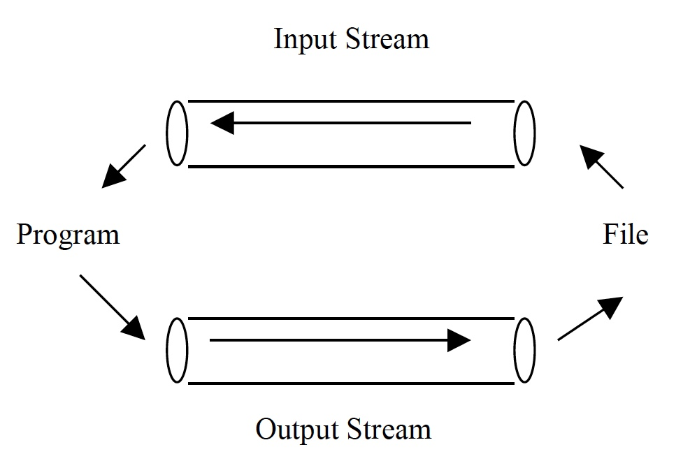
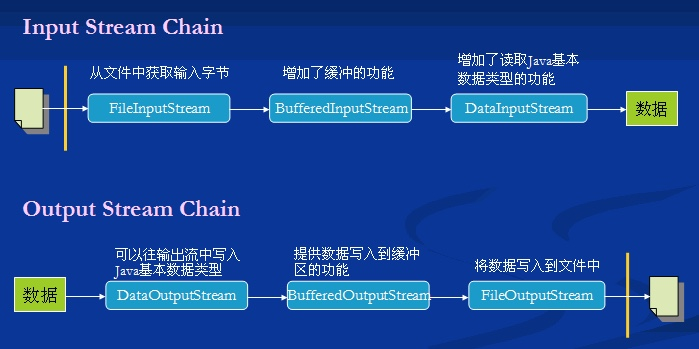
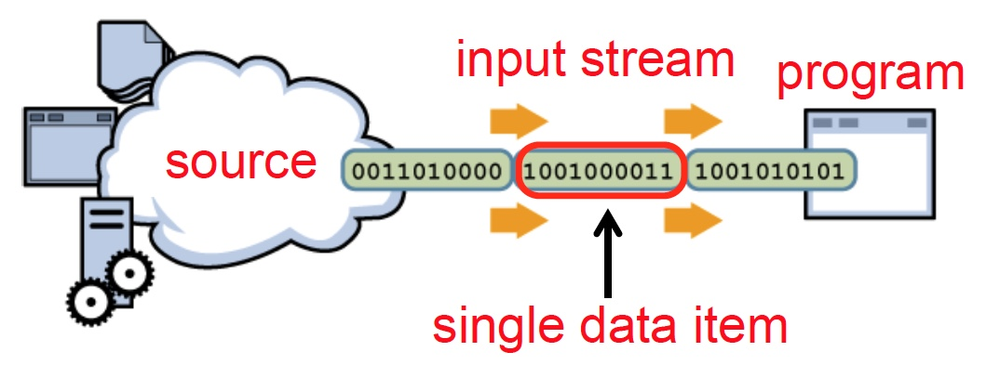
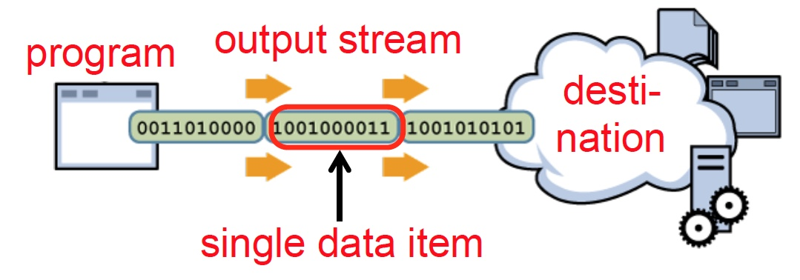
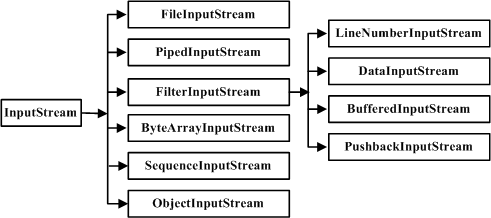
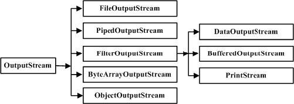
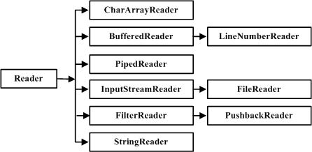
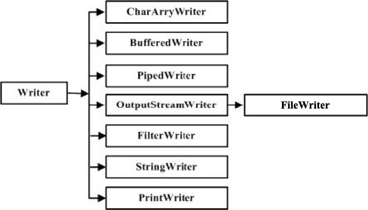

<!DOCTYPE html><html lang="zh-CN"><head><meta charset="UTF-8"><meta name="viewport" content="width=device-width,height=device-height,initial-scale=1.0"><meta name="apple-mobile-web-app-capable" content="yes"><meta http-equiv="X-UA-Compatible" content="ie=edge"><meta property="og:type" content="website"><meta name="twitter:card" content="summary"><style>.bespoke-marp-note,.bespoke-marp-osc,.bespoke-progress-parent{display:none;transition:none}@media screen{body[data-bespoke-view=""] .bespoke-marp-parent>.bespoke-marp-osc>button,body[data-bespoke-view=next] .bespoke-marp-parent>.bespoke-marp-osc>button,body[data-bespoke-view=presenter] .bespoke-marp-presenter-container .bespoke-marp-presenter-info-container button{-webkit-appearance:none;-moz-appearance:none;appearance:none;background-color:transparent;border:0;color:inherit;cursor:pointer;font-size:inherit;opacity:.8;outline:none;padding:0;transition:opacity .2s linear;-webkit-tap-highlight-color:transparent}body[data-bespoke-view=""] .bespoke-marp-parent>.bespoke-marp-osc>button:disabled,body[data-bespoke-view=next] .bespoke-marp-parent>.bespoke-marp-osc>button:disabled,body[data-bespoke-view=presenter] .bespoke-marp-presenter-container .bespoke-marp-presenter-info-container button:disabled{cursor:not-allowed;opacity:.15!important}body[data-bespoke-view=""] .bespoke-marp-parent>.bespoke-marp-osc>button:hover,body[data-bespoke-view=next] .bespoke-marp-parent>.bespoke-marp-osc>button:hover,body[data-bespoke-view=presenter] .bespoke-marp-presenter-container .bespoke-marp-presenter-info-container button:hover{opacity:1}body[data-bespoke-view=""] .bespoke-marp-parent>.bespoke-marp-osc>button:hover:active,body[data-bespoke-view=next] .bespoke-marp-parent>.bespoke-marp-osc>button:hover:active,body[data-bespoke-view=presenter] .bespoke-marp-presenter-container .bespoke-marp-presenter-info-container button:hover:active{opacity:.6}body[data-bespoke-view=""] .bespoke-marp-parent>.bespoke-marp-osc>button:hover:not(:disabled),body[data-bespoke-view=next] .bespoke-marp-parent>.bespoke-marp-osc>button:hover:not(:disabled),body[data-bespoke-view=presenter] .bespoke-marp-presenter-container .bespoke-marp-presenter-info-container button:hover:not(:disabled){transition:none}body[data-bespoke-view=""] .bespoke-marp-parent>.bespoke-marp-osc>button[data-bespoke-marp-osc=prev],body[data-bespoke-view=next] .bespoke-marp-parent>.bespoke-marp-osc>button[data-bespoke-marp-osc=prev],body[data-bespoke-view=presenter] .bespoke-marp-presenter-container .bespoke-marp-presenter-info-container button.bespoke-marp-presenter-info-page-prev{background:transparent url("") no-repeat 50%;background-size:contain;overflow:hidden;text-indent:100%;white-space:nowrap}body[data-bespoke-view=""] .bespoke-marp-parent>.bespoke-marp-osc>button[data-bespoke-marp-osc=next],body[data-bespoke-view=next] .bespoke-marp-parent>.bespoke-marp-osc>button[data-bespoke-marp-osc=next],body[data-bespoke-view=presenter] .bespoke-marp-presenter-container .bespoke-marp-presenter-info-container button.bespoke-marp-presenter-info-page-next{background:transparent url("") no-repeat 50%;background-size:contain;overflow:hidden;text-indent:100%;white-space:nowrap}body[data-bespoke-view=""] .bespoke-marp-parent>.bespoke-marp-osc>button[data-bespoke-marp-osc=fullscreen],body[data-bespoke-view=next] .bespoke-marp-parent>.bespoke-marp-osc>button[data-bespoke-marp-osc=fullscreen]{background:transparent url("") no-repeat 50%;background-size:contain;overflow:hidden;text-indent:100%;white-space:nowrap}body[data-bespoke-view=""] .bespoke-marp-parent>.bespoke-marp-osc>button.exit[data-bespoke-marp-osc=fullscreen],body[data-bespoke-view=next] .bespoke-marp-parent>.bespoke-marp-osc>button.exit[data-bespoke-marp-osc=fullscreen]{background-image:url("")}body[data-bespoke-view=""] .bespoke-marp-parent>.bespoke-marp-osc>button[data-bespoke-marp-osc=presenter],body[data-bespoke-view=next] .bespoke-marp-parent>.bespoke-marp-osc>button[data-bespoke-marp-osc=presenter]{background:transparent url("") no-repeat 50%;background-size:contain;overflow:hidden;text-indent:100%;white-space:nowrap}body,html{height:100%;margin:0}body{background:#000;overflow:hidden}svg.bespoke-marp-slide{content-visibility:hidden;z-index:-1;pointer-events:none;opacity:0}svg.bespoke-marp-slide.bespoke-marp-active{content-visibility:visible;z-index:0;pointer-events:auto;opacity:1}svg.bespoke-marp-slide.bespoke-marp-active.bespoke-marp-active-ready *{-webkit-animation-name:__bespoke_marp__!important;animation-name:__bespoke_marp__!important}@supports not (content-visibility:hidden){svg.bespoke-marp-slide[data-bespoke-marp-load=hideable]{display:none}svg.bespoke-marp-slide[data-bespoke-marp-load=hideable].bespoke-marp-active{display:block}}[data-bespoke-marp-fragment=inactive]{visibility:hidden}body[data-bespoke-view=""] .bespoke-marp-parent,body[data-bespoke-view=next] .bespoke-marp-parent{bottom:0;left:0;position:absolute;right:0;top:0}body[data-bespoke-view=""] .bespoke-marp-parent>.bespoke-marp-osc,body[data-bespoke-view=next] .bespoke-marp-parent>.bespoke-marp-osc{background:rgba(0,0,0,.65);border-radius:7px;bottom:50px;color:#fff;display:block;font-family:Helvetica,Arial,sans-serif;font-size:16px;left:50%;line-height:0;opacity:1;padding:12px;position:absolute;touch-action:manipulation;transform:translateX(-50%);transition:opacity .2s linear;-webkit-user-select:none;-moz-user-select:none;-ms-user-select:none;user-select:none;white-space:nowrap;z-index:1;will-change:transform}body[data-bespoke-view=""] .bespoke-marp-parent>.bespoke-marp-osc>*,body[data-bespoke-view=next] .bespoke-marp-parent>.bespoke-marp-osc>*{margin-left:6px}body[data-bespoke-view=""] .bespoke-marp-parent>.bespoke-marp-osc>:first-child,body[data-bespoke-view=next] .bespoke-marp-parent>.bespoke-marp-osc>:first-child{margin-left:0}body[data-bespoke-view=""] .bespoke-marp-parent>.bespoke-marp-osc>span,body[data-bespoke-view=next] .bespoke-marp-parent>.bespoke-marp-osc>span{opacity:.8}body[data-bespoke-view=""] .bespoke-marp-parent>.bespoke-marp-osc>span[data-bespoke-marp-osc=page],body[data-bespoke-view=next] .bespoke-marp-parent>.bespoke-marp-osc>span[data-bespoke-marp-osc=page]{display:inline-block;min-width:140px;text-align:center}body[data-bespoke-view=""] .bespoke-marp-parent>.bespoke-marp-osc>button[data-bespoke-marp-osc=fullscreen],body[data-bespoke-view=""] .bespoke-marp-parent>.bespoke-marp-osc>button[data-bespoke-marp-osc=next],body[data-bespoke-view=""] .bespoke-marp-parent>.bespoke-marp-osc>button[data-bespoke-marp-osc=presenter],body[data-bespoke-view=""] .bespoke-marp-parent>.bespoke-marp-osc>button[data-bespoke-marp-osc=prev],body[data-bespoke-view=next] .bespoke-marp-parent>.bespoke-marp-osc>button[data-bespoke-marp-osc=fullscreen],body[data-bespoke-view=next] .bespoke-marp-parent>.bespoke-marp-osc>button[data-bespoke-marp-osc=next],body[data-bespoke-view=next] .bespoke-marp-parent>.bespoke-marp-osc>button[data-bespoke-marp-osc=presenter],body[data-bespoke-view=next] .bespoke-marp-parent>.bespoke-marp-osc>button[data-bespoke-marp-osc=prev]{height:32px;line-height:32px;width:32px}body[data-bespoke-view=""] .bespoke-marp-parent.bespoke-marp-inactive,body[data-bespoke-view=next] .bespoke-marp-parent.bespoke-marp-inactive{cursor:none}body[data-bespoke-view=""] .bespoke-marp-parent.bespoke-marp-inactive>.bespoke-marp-osc,body[data-bespoke-view=next] .bespoke-marp-parent.bespoke-marp-inactive>.bespoke-marp-osc{opacity:0;pointer-events:none}body[data-bespoke-view=""] svg.bespoke-marp-slide,body[data-bespoke-view=next] svg.bespoke-marp-slide{height:100%;left:0;position:absolute;top:0;width:100%}body[data-bespoke-view=""] .bespoke-progress-parent{background:#222;display:flex;height:5px;width:100%}body[data-bespoke-view=""] .bespoke-progress-parent+.bespoke-marp-parent{top:5px}body[data-bespoke-view=""] .bespoke-progress-parent .bespoke-progress-bar{flex:0 0 0;background:#0288d1;transition:flex-basis .2s cubic-bezier(0,1,1,1)}body[data-bespoke-view=next]{background:transparent}body[data-bespoke-view=presenter]{background:#161616}body[data-bespoke-view=presenter] .bespoke-marp-presenter-container{font-family:Helvetica,Arial,sans-serif;height:100%;left:0;position:absolute;top:0;width:100%;display:grid;grid-template-columns:2fr 1fr;grid-template-rows:minmax(140px,1fr) 2fr 3em;grid-template-areas:"current next" "current note" "info    note"}body[data-bespoke-view=presenter] .bespoke-marp-presenter-container .bespoke-marp-parent{grid-area:current;position:relative;overflow:hidden}body[data-bespoke-view=presenter] .bespoke-marp-presenter-container .bespoke-marp-parent svg.bespoke-marp-slide{height:calc(100% - 40px);left:20px;position:absolute;pointer-events:none;top:20px;-webkit-user-select:none;-moz-user-select:none;-ms-user-select:none;user-select:none;width:calc(100% - 40px)}body[data-bespoke-view=presenter] .bespoke-marp-presenter-container .bespoke-marp-parent svg.bespoke-marp-slide.bespoke-marp-active{filter:drop-shadow(0 3px 10px rgba(0,0,0,.5))}body[data-bespoke-view=presenter] .bespoke-marp-presenter-container .bespoke-marp-presenter-next-container{background:#222;cursor:pointer;display:none;grid-area:next;overflow:hidden;position:relative}body[data-bespoke-view=presenter] .bespoke-marp-presenter-container .bespoke-marp-presenter-next-container.active{display:block}body[data-bespoke-view=presenter] .bespoke-marp-presenter-container .bespoke-marp-presenter-next-container iframe.bespoke-marp-presenter-next{background:transparent;border:0;display:block;filter:drop-shadow(0 3px 10px rgba(0,0,0,.5));height:calc(100% - 40px);left:20px;position:absolute;pointer-events:none;-webkit-user-select:none;-moz-user-select:none;-ms-user-select:none;user-select:none;top:20px;width:calc(100% - 40px)}body[data-bespoke-view=presenter] .bespoke-marp-presenter-container .bespoke-marp-presenter-note-container{background:#222;color:#eee;grid-area:note}body[data-bespoke-view=presenter] .bespoke-marp-presenter-container .bespoke-marp-presenter-note-container .bespoke-marp-note{margin:20px;width:calc(100% - 40px);height:calc(100% - 40px);box-sizing:border-box;font-size:1.1em;overflow:auto;padding-right:3px;white-space:pre-wrap;word-wrap:break-word;scrollbar-width:thin;scrollbar-color:hsla(0,0%,93.3%,.5) transparent}body[data-bespoke-view=presenter] .bespoke-marp-presenter-container .bespoke-marp-presenter-note-container .bespoke-marp-note::-webkit-scrollbar{width:6px}body[data-bespoke-view=presenter] .bespoke-marp-presenter-container .bespoke-marp-presenter-note-container .bespoke-marp-note::-webkit-scrollbar-track{background:transparent}body[data-bespoke-view=presenter] .bespoke-marp-presenter-container .bespoke-marp-presenter-note-container .bespoke-marp-note::-webkit-scrollbar-thumb{background:hsla(0,0%,93.3%,.5);border-radius:6px}body[data-bespoke-view=presenter] .bespoke-marp-presenter-container .bespoke-marp-presenter-note-container .bespoke-marp-note:empty{pointer-events:none}body[data-bespoke-view=presenter] .bespoke-marp-presenter-container .bespoke-marp-presenter-note-container .bespoke-marp-note.active{display:block}body[data-bespoke-view=presenter] .bespoke-marp-presenter-container .bespoke-marp-presenter-note-container .bespoke-marp-note p:first-child{margin-top:0}body[data-bespoke-view=presenter] .bespoke-marp-presenter-container .bespoke-marp-presenter-note-container .bespoke-marp-note p:last-child{margin-bottom:0}body[data-bespoke-view=presenter] .bespoke-marp-presenter-container .bespoke-marp-presenter-info-container{align-items:center;box-sizing:border-box;color:#eee;display:flex;flex-wrap:nowrap;grid-area:info;justify-content:center;padding:0 10px}body[data-bespoke-view=presenter] .bespoke-marp-presenter-container .bespoke-marp-presenter-info-container .bespoke-marp-presenter-info-page,body[data-bespoke-view=presenter] .bespoke-marp-presenter-container .bespoke-marp-presenter-info-container .bespoke-marp-presenter-info-time,body[data-bespoke-view=presenter] .bespoke-marp-presenter-container .bespoke-marp-presenter-info-container .bespoke-marp-presenter-info-timer{display:block;box-sizing:border-box;padding:0 10px;white-space:nowrap;width:100%}body[data-bespoke-view=presenter] .bespoke-marp-presenter-container .bespoke-marp-presenter-info-container button{height:1.5em;line-height:1.5em;width:1.5em}body[data-bespoke-view=presenter] .bespoke-marp-presenter-container .bespoke-marp-presenter-info-container .bespoke-marp-presenter-info-page{order:2;text-align:center}body[data-bespoke-view=presenter] .bespoke-marp-presenter-container .bespoke-marp-presenter-info-container .bespoke-marp-presenter-info-page .bespoke-marp-presenter-info-page-text{display:inline-block;min-width:120px;text-align:center}body[data-bespoke-view=presenter] .bespoke-marp-presenter-container .bespoke-marp-presenter-info-container .bespoke-marp-presenter-info-time{color:#999;order:1;text-align:left}body[data-bespoke-view=presenter] .bespoke-marp-presenter-container .bespoke-marp-presenter-info-container .bespoke-marp-presenter-info-timer{color:#999;order:3;text-align:right}}@media print{.bespoke-marp-presenter-info-container,.bespoke-marp-presenter-next-container,.bespoke-marp-presenter-note-container{display:none}}</style><style>@charset "UTF-8";@import url("https://fonts.googleapis.com/css?family=Lato:400,900|Roboto+Mono:400,700&display=swap");div#p>svg>foreignObject>section{width:1280px;height:720px;box-sizing:border-box;overflow:hidden;position:relative;scroll-snap-align:center center}div#p>svg>foreignObject>section:after{bottom:0;content:attr(data-marpit-pagination);padding:inherit;pointer-events:none;position:absolute;right:0}div#p>svg>foreignObject>section:not([data-marpit-pagination]):after{display:none}/* Normalization */div#p>svg>foreignObject>section h1{font-size:2em;margin:0.67em 0}div#p>svg>foreignObject>section video::-webkit-media-controls{will-change:transform}@page{size:1280px 720px;margin:0}@media print{body,html{background-color:#fff;margin:0;page-break-inside:avoid;break-inside:avoid-page}div#p>svg>foreignObject>section{page-break-before:always;break-before:page}div#p>svg>foreignObject>section,div#p>svg>foreignObject>section *{-webkit-print-color-adjust:exact!important;animation-delay:0s!important;animation-duration:0s!important;color-adjust:exact!important;transition:none!important}div#p>svg[data-marpit-svg]{display:block;height:100vh;width:100vw}}div#p>svg>foreignObject>section svg[data-marp-fitting=svg]{display:block;height:auto;width:100%}@supports (-ms-ime-align:auto){div#p>svg>foreignObject>section svg[data-marp-fitting=svg]{position:static}}div#p>svg>foreignObject>section svg[data-marp-fitting=svg].__reflow__{content:""}@supports (-ms-ime-align:auto){div#p>svg>foreignObject>section svg[data-marp-fitting=svg].__reflow__{position:relative}}div#p>svg>foreignObject>section [data-marp-fitting-svg-content]{display:table;white-space:nowrap}div#p>svg>foreignObject>section [data-marp-fitting-svg-content-wrap]{white-space:pre}div#p>svg>foreignObject>section img[data-marp-twemoji]{background:transparent;height:1em;margin:0 .05em 0 .1em;vertical-align:-.1em;width:1em}
/*!
 * Marp / Marpit Gaia theme.
 *
 * @theme gaia
 * @author Yuki Hattori
 *
 * @auto-scaling true
 * @size 4:3 960px 720px
 */div#p>svg>foreignObject>section .hljs{display:block;overflow-x:auto;padding:.5em;background:#000;color:#f8f8f8}div#p>svg>foreignObject>section .hljs-comment,div#p>svg>foreignObject>section .hljs-quote{color:#aeaeae;font-style:italic}div#p>svg>foreignObject>section .hljs-keyword,div#p>svg>foreignObject>section .hljs-selector-tag,div#p>svg>foreignObject>section .hljs-type{color:#e28964}div#p>svg>foreignObject>section .hljs-string{color:#65b042}div#p>svg>foreignObject>section .hljs-subst{color:#daefa3}div#p>svg>foreignObject>section .hljs-link,div#p>svg>foreignObject>section .hljs-regexp{color:#e9c062}div#p>svg>foreignObject>section .hljs-name,div#p>svg>foreignObject>section .hljs-section,div#p>svg>foreignObject>section .hljs-tag,div#p>svg>foreignObject>section .hljs-title{color:#89bdff}div#p>svg>foreignObject>section .hljs-class .hljs-title,div#p>svg>foreignObject>section .hljs-doctag{text-decoration:underline}div#p>svg>foreignObject>section .hljs-bullet,div#p>svg>foreignObject>section .hljs-number,div#p>svg>foreignObject>section .hljs-symbol{color:#3387cc}div#p>svg>foreignObject>section .hljs-params,div#p>svg>foreignObject>section .hljs-template-variable,div#p>svg>foreignObject>section .hljs-variable{color:#3e87e3}div#p>svg>foreignObject>section .hljs-attribute{color:#cda869}div#p>svg>foreignObject>section .hljs-meta{color:#8996a8}div#p>svg>foreignObject>section .hljs-formula{background-color:#0e2231;color:#f8f8f8;font-style:italic}div#p>svg>foreignObject>section .hljs-addition{background-color:#253b22;color:#f8f8f8}div#p>svg>foreignObject>section .hljs-deletion{background-color:#420e09;color:#f8f8f8}div#p>svg>foreignObject>section .hljs-selector-class{color:#9b703f}div#p>svg>foreignObject>section .hljs-selector-id{color:#8b98ab}div#p>svg>foreignObject>section .hljs-emphasis{font-style:italic}div#p>svg>foreignObject>section .hljs-strong{font-weight:700}div#p>svg>foreignObject>section svg[data-marp-fitting=svg]{max-height:580px}div#p>svg>foreignObject>section h1,div#p>svg>foreignObject>section h2,div#p>svg>foreignObject>section h3,div#p>svg>foreignObject>section h4,div#p>svg>foreignObject>section h5,div#p>svg>foreignObject>section h6{margin:.5em 0 0}div#p>svg>foreignObject>section h1 strong,div#p>svg>foreignObject>section h2 strong,div#p>svg>foreignObject>section h3 strong,div#p>svg>foreignObject>section h4 strong,div#p>svg>foreignObject>section h5 strong,div#p>svg>foreignObject>section h6 strong{font-weight:inherit}div#p>svg>foreignObject>section h1{font-size:1.8em}div#p>svg>foreignObject>section h2{font-size:1.5em}div#p>svg>foreignObject>section h3{font-size:1.3em}div#p>svg>foreignObject>section h4{font-size:1.1em}div#p>svg>foreignObject>section h5{font-size:1em}div#p>svg>foreignObject>section h6{font-size:.9em}div#p>svg>foreignObject>section blockquote,div#p>svg>foreignObject>section p{margin:1em 0 0}div#p>svg>foreignObject>section ol>li,div#p>svg>foreignObject>section ul>li{margin:.3em 0 0}div#p>svg>foreignObject>section ol>li>p,div#p>svg>foreignObject>section ul>li>p{margin:.6em 0 0}div#p>svg>foreignObject>section code{display:inline-block;font-family:Roboto Mono,monospace;font-size:.8em;letter-spacing:0;margin:-.1em .15em;padding:.1em .2em;vertical-align:baseline}div#p>svg>foreignObject>section pre{display:block;margin:1em 0 0;min-height:1em;overflow:visible}div#p>svg>foreignObject>section pre code{box-sizing:border-box;margin:0;min-width:100%;padding:.5em;font-size:.7em}div#p>svg>foreignObject>section pre code svg[data-marp-fitting=svg]{max-height:calc(580px - 1em)}div#p>svg>foreignObject>section blockquote{margin:1em 0 0;padding:0 1em;position:relative}div#p>svg>foreignObject>section blockquote:after,div#p>svg>foreignObject>section blockquote:before{content:"“";display:block;font-family:Times New Roman,serif;font-weight:700;position:absolute}div#p>svg>foreignObject>section blockquote:before{top:0;left:0}div#p>svg>foreignObject>section blockquote:after{right:0;bottom:0;transform:rotate(180deg)}div#p>svg>foreignObject>section blockquote>:first-child{margin-top:0}div#p>svg>foreignObject>section mark{background:transparent}div#p>svg>foreignObject>section table{border-spacing:0;border-collapse:collapse;margin:1em 0 0}div#p>svg>foreignObject>section table td,div#p>svg>foreignObject>section table th{padding:.2em .4em;border-width:1px;border-style:solid}div#p>svg>foreignObject>section{background-image:linear-gradient(135deg,hsla(0,0%,53.3%,0),hsla(0,0%,53.3%,.02) 50%,hsla(0,0%,100%,0) 0,hsla(0,0%,100%,.05));font-size:35px;font-family:Lato,Avenir Next,Avenir,Trebuchet MS,Segoe UI,sans-serif;height:720px;line-height:1.35;letter-spacing:1.25px;padding:70px;width:1280px;word-wrap:break-word;color:#455a64;background-color:#fff8e1}div#p>svg>foreignObject>section{--marpit-root-font-size:35px}div#p>svg>foreignObject>section>:first-child,div#p>svg>foreignObject>section>header:first-child+*{margin-top:0}div#p>svg>foreignObject>section a,div#p>svg>foreignObject>section mark{color:#0288d1}div#p>svg>foreignObject>section code{background:#6a7a7d;color:#fff8e1}div#p>svg>foreignObject>section h1 strong,div#p>svg>foreignObject>section h2 strong,div#p>svg>foreignObject>section h3 strong,div#p>svg>foreignObject>section h4 strong,div#p>svg>foreignObject>section h5 strong,div#p>svg>foreignObject>section h6 strong{color:#0288d1}div#p>svg>foreignObject>section pre>code{background:#455a64}div#p>svg>foreignObject>section blockquote:after,div#p>svg>foreignObject>section blockquote:before,div#p>svg>foreignObject>section footer,div#p>svg>foreignObject>section header,div#p>svg>foreignObject>section section:after{color:#6a7a7d}div#p>svg>foreignObject>section table td,div#p>svg>foreignObject>section table th{border-color:#455a64}div#p>svg>foreignObject>section table thead th{background:#455a64;color:#fff8e1}div#p>svg>foreignObject>section table tbody>tr:nth-child(odd) td,div#p>svg>foreignObject>section table tbody>tr:nth-child(odd) th{background:rgba(69,90,100,.1)}div#p>svg>foreignObject>section.invert{color:#fff8e1;background-color:#455a64}div#p>svg>foreignObject>section.invert a,div#p>svg>foreignObject>section.invert mark{color:#81d4fa}div#p>svg>foreignObject>section.invert code{background:#dad8c8;color:#455a64}div#p>svg>foreignObject>section.invert h1 strong,div#p>svg>foreignObject>section.invert h2 strong,div#p>svg>foreignObject>section.invert h3 strong,div#p>svg>foreignObject>section.invert h4 strong,div#p>svg>foreignObject>section.invert h5 strong,div#p>svg>foreignObject>section.invert h6 strong{color:#81d4fa}div#p>svg>foreignObject>section.invert pre>code{background:#fff8e1}div#p>svg>foreignObject>section.invert blockquote:after,div#p>svg>foreignObject>section.invert blockquote:before,div#p>svg>foreignObject>section.invert footer,div#p>svg>foreignObject>section.invert header,div#p>svg>foreignObject>section.invert section:after{color:#dad8c8}div#p>svg>foreignObject>section.invert table td,div#p>svg>foreignObject>section.invert table th{border-color:#fff8e1}div#p>svg>foreignObject>section.invert table thead th{background:#fff8e1;color:#455a64}div#p>svg>foreignObject>section.invert table tbody>tr:nth-child(odd) td,div#p>svg>foreignObject>section.invert table tbody>tr:nth-child(odd) th{background:rgba(255,248,225,.1)}div#p>svg>foreignObject>section.gaia{color:#fff8e1;background-color:#0288d1}div#p>svg>foreignObject>section.gaia a,div#p>svg>foreignObject>section.gaia mark{color:#81d4fa}div#p>svg>foreignObject>section.gaia code{background:#cce2de;color:#0288d1}div#p>svg>foreignObject>section.gaia h1 strong,div#p>svg>foreignObject>section.gaia h2 strong,div#p>svg>foreignObject>section.gaia h3 strong,div#p>svg>foreignObject>section.gaia h4 strong,div#p>svg>foreignObject>section.gaia h5 strong,div#p>svg>foreignObject>section.gaia h6 strong{color:#81d4fa}div#p>svg>foreignObject>section.gaia pre>code{background:#fff8e1}div#p>svg>foreignObject>section.gaia blockquote:after,div#p>svg>foreignObject>section.gaia blockquote:before,div#p>svg>foreignObject>section.gaia footer,div#p>svg>foreignObject>section.gaia header,div#p>svg>foreignObject>section.gaia section:after{color:#cce2de}div#p>svg>foreignObject>section.gaia table td,div#p>svg>foreignObject>section.gaia table th{border-color:#fff8e1}div#p>svg>foreignObject>section.gaia table thead th{background:#fff8e1;color:#0288d1}div#p>svg>foreignObject>section.gaia table tbody>tr:nth-child(odd) td,div#p>svg>foreignObject>section.gaia table tbody>tr:nth-child(odd) th{background:rgba(255,248,225,.1)}div#p>svg>foreignObject>section.lead{display:flex;flex-direction:column;flex-wrap:nowrap;justify-content:center}div#p>svg>foreignObject>section.lead h1,div#p>svg>foreignObject>section.lead h2,div#p>svg>foreignObject>section.lead h3,div#p>svg>foreignObject>section.lead h4,div#p>svg>foreignObject>section.lead h5,div#p>svg>foreignObject>section.lead h6{text-align:center}div#p>svg>foreignObject>section.lead h1 svg[data-marp-fitting=svg],div#p>svg>foreignObject>section.lead h2 svg[data-marp-fitting=svg],div#p>svg>foreignObject>section.lead h3 svg[data-marp-fitting=svg],div#p>svg>foreignObject>section.lead h4 svg[data-marp-fitting=svg],div#p>svg>foreignObject>section.lead h5 svg[data-marp-fitting=svg],div#p>svg>foreignObject>section.lead h6 svg[data-marp-fitting=svg]{--preserve-aspect-ratio:xMidYMid meet}div#p>svg>foreignObject>section.lead p{text-align:center}div#p>svg>foreignObject>section.lead blockquote>h1,div#p>svg>foreignObject>section.lead blockquote>h2,div#p>svg>foreignObject>section.lead blockquote>h3,div#p>svg>foreignObject>section.lead blockquote>h4,div#p>svg>foreignObject>section.lead blockquote>h5,div#p>svg>foreignObject>section.lead blockquote>h6,div#p>svg>foreignObject>section.lead blockquote>p{text-align:left}div#p>svg>foreignObject>section.lead blockquote svg[data-marp-fitting=svg]:not([data-marp-fitting-math]){--preserve-aspect-ratio:xMinYMin meet}div#p>svg>foreignObject>section.lead ol>li>p,div#p>svg>foreignObject>section.lead ul>li>p{text-align:left}div#p>svg>foreignObject>section.lead table{margin-left:auto;margin-right:auto}div#p>svg>foreignObject>section:after,div#p>svg>foreignObject>section footer,div#p>svg>foreignObject>section header{box-sizing:border-box;font-size:66%;height:70px;line-height:50px;overflow:hidden;padding:10px 25px;position:absolute}div#p>svg>foreignObject>section:after{--marpit-root-font-size:66%}div#p>svg>foreignObject>section header{top:0}div#p>svg>foreignObject>section footer,div#p>svg>foreignObject>section header{left:0;right:0}div#p>svg>foreignObject>section footer{bottom:0}div#p>svg>foreignObject>section:after{right:0;bottom:0;font-size:80%}div#p>svg>foreignObject>section:after{--marpit-root-font-size:80%}div#p>svg>foreignObject>section img{display:block;margin:0 auto}div#p>svg>foreignObject>section code,div#p>svg>foreignObject>section pre{overflow-y:auto;max-height:500px}div#p>svg>foreignObject>section[data-marpit-advanced-background=background]{display:block!important;padding:0!important}div#p>svg>foreignObject>section[data-marpit-advanced-background=background]:after,div#p>svg>foreignObject>section[data-marpit-advanced-background=background]:before,div#p>svg>foreignObject>section[data-marpit-advanced-background=content]:after,div#p>svg>foreignObject>section[data-marpit-advanced-background=content]:before{display:none!important}div#p>svg>foreignObject>section[data-marpit-advanced-background=background]>div[data-marpit-advanced-background-container]{all:initial;display:flex;flex-direction:row;height:100%;overflow:hidden;width:100%}div#p>svg>foreignObject>section[data-marpit-advanced-background=background]>div[data-marpit-advanced-background-container][data-marpit-advanced-background-direction=vertical]{flex-direction:column}div#p>svg>foreignObject>section[data-marpit-advanced-background=background][data-marpit-advanced-background-split]>div[data-marpit-advanced-background-container]{width:var(--marpit-advanced-background-split,50%)}div#p>svg>foreignObject>section[data-marpit-advanced-background=background][data-marpit-advanced-background-split=right]>div[data-marpit-advanced-background-container]{margin-left:calc(100% - var(--marpit-advanced-background-split, 50%))}div#p>svg>foreignObject>section[data-marpit-advanced-background=background]>div[data-marpit-advanced-background-container]>figure{all:initial;background-position:center;background-repeat:no-repeat;background-size:cover;flex:auto;margin:0}div#p>svg>foreignObject>section[data-marpit-advanced-background=content],div#p>svg>foreignObject>section[data-marpit-advanced-background=pseudo]{background:transparent!important}div#p>svg>foreignObject>section[data-marpit-advanced-background=pseudo],div#p>svg[data-marpit-svg]>foreignObject[data-marpit-advanced-background=pseudo]{pointer-events:none!important}div#p>svg>foreignObject>section[data-marpit-advanced-background-split]{width:100%;height:100%}</style></head><body><div class="bespoke-marp-osc"><button data-bespoke-marp-osc="prev" tabindex="-1" title="Previous slide">Previous slide</button><span data-bespoke-marp-osc="page"></span><button data-bespoke-marp-osc="next" tabindex="-1" title="Next slide">Next slide</button><button data-bespoke-marp-osc="fullscreen" tabindex="-1" title="Toggle fullscreen (f)">Toggle fullscreen</button><button data-bespoke-marp-osc="presenter" tabindex="-1" title="Open presenter view (p)">Open presenter view</button></div><div id="p"><svg data-marpit-svg="" viewBox="0 0 1280 720"><foreignObject width="1280" height="720"><section data-paginate="true" data-background-color="#fff" data-class="lead" data-theme="gaia" class="lead" data-marpit-pagination="1" data-marpit-pagination-total="51" style="--paginate:true;--background-color:#fff;--class:lead;--theme:gaia;background-color:#fff;background-image:none;--marpit-advanced-background-split:30%;" data-marpit-advanced-background="background" data-marpit-advanced-background-split="right"><div data-marpit-advanced-background-container="true" data-marpit-advanced-background-direction="horizontal"><figure style="background-image:url(&quot;https://upload.wikimedia.org/wikipedia/zh/8/88/Java_logo.png&quot;);background-size:90%;"></figure></div></section></foreignObject><foreignObject width="70%" height="720"><section id="1" data-paginate="true" data-background-color="#fff" data-class="lead" data-theme="gaia" class="lead" data-marpit-pagination="1" data-marpit-pagination-total="51" style="--paginate:true;--background-color:#fff;--class:lead;--theme:gaia;background-color:#fff;background-image:none;--marpit-advanced-background-split:30%;" data-marpit-advanced-background="content" data-marpit-advanced-background-split="right">
<h2>输入输出</h2>
<br />
<h4>&quot;I/O是Java最重要的API之一&quot;</h4>
<h2></h2>
<p><small><a href="https://docs.oracle.com/javase/tutorial/essential/io/index.html">https://docs.oracle.com/javase/tutorial/essential/io/index.html</a></small></p>
</section>
</foreignObject><foreignObject width="1280" height="720" data-marpit-advanced-background="pseudo"><section class="lead" style="" data-marpit-advanced-background="pseudo" data-marpit-pagination="1" data-marpit-pagination-total="51"></section></foreignObject></svg><svg data-marpit-svg="" viewBox="0 0 1280 720"><foreignObject width="1280" height="720"><section id="2" data-paginate="true" data-background-color="#fff" data-theme="gaia" data-marpit-pagination="2" data-marpit-pagination-total="51" style="--paginate:true;--background-color:#fff;--theme:gaia;background-color:#fff;background-image:none;">
<h2><a href="http://java.io">java.io</a></h2>
<ul>
<li>标准Java包
<ul>
<li>定义输入/输出类</li>
<li>支持console，files，network connections......</li>
<li>支持raw I/O（未经处理的二进制数据），formatted I/O（经过一定编码处理后符合某种特定格式的数据）</li>
<li>不支持绘制和显示图形界面，不支持鼠标</li>
</ul>
</li>
<li>基于Stream</li>
</ul>
</section>
</foreignObject></svg><svg data-marpit-svg="" viewBox="0 0 1280 720"><foreignObject width="1280" height="720"><section id="3" data-paginate="true" data-background-color="#fff" data-theme="gaia" data-marpit-pagination="3" data-marpit-pagination-total="51" style="--paginate:true;--background-color:#fff;--theme:gaia;background-color:#fff;background-image:none;">
<h2>Stream</h2>
<ul>
<li>A <em><strong>stream</strong></em> is an abstraction of the continuous one-way flow of data.</li>
<li>流是一种有序的字节数据对象。流又分为输入流（InputStream）和输出流（OutputStream）。输入流从外部资源（文件，内存，socket等）读入字节数据到Java对象；输出流则把Java对象（字节数据等）写入到外部资源。</li>
<li>所有Java I/O都可以归类为以下两类：1.字节数据输入输出I/O；2.字符数据输入输出I/O。</li>
</ul>
</section>
</foreignObject></svg><svg data-marpit-svg="" viewBox="0 0 1280 720"><foreignObject width="1280" height="720"><section id="4" data-paginate="true" data-background-color="#fff" data-theme="gaia" data-marpit-pagination="4" data-marpit-pagination-total="51" style="--paginate:true;--background-color:#fff;--theme:gaia;background-color:#fff;background-image:none;">
<h2>Stream</h2>
<p></p>
</section>
</foreignObject></svg><svg data-marpit-svg="" viewBox="0 0 1280 720"><foreignObject width="1280" height="720"><section id="5" data-paginate="true" data-background-color="#fff" data-theme="gaia" data-marpit-pagination="5" data-marpit-pagination-total="51" style="--paginate:true;--background-color:#fff;--theme:gaia;background-color:#fff;background-image:none;">
<h2>Stream</h2>
<ul>
<li>Java的I/O库提供了一个称做链接（Chaining）的机制，可以将一个流处理器跟另一个流处理器首尾相接，以其中之一的输出为输入，形成一个流管道的链接。</li>
</ul>
<p></p>
</section>
</foreignObject></svg><svg data-marpit-svg="" viewBox="0 0 1280 720"><foreignObject width="1280" height="720"><section id="6" data-paginate="true" data-background-color="#fff" data-theme="gaia" data-marpit-pagination="6" data-marpit-pagination-total="51" style="--paginate:true;--background-color:#fff;--theme:gaia;background-color:#fff;background-image:none;">
<h2>Input Stream</h2>
<ul>
<li>source可以是键盘输入、磁盘文件、物理设备、另外一个程序，或者同一个程序中的数组或字符串</li>
</ul>
<p></p>
</section>
</foreignObject></svg><svg data-marpit-svg="" viewBox="0 0 1280 720"><foreignObject width="1280" height="720"><section id="7" data-paginate="true" data-background-color="#fff" data-theme="gaia" data-marpit-pagination="7" data-marpit-pagination-total="51" style="--paginate:true;--background-color:#fff;--theme:gaia;background-color:#fff;background-image:none;">
<h2>Output Stream</h2>
<ul>
<li>destination可以是控制台、磁盘文件、物理设备、另外一个程序，或者同一个程序中的数组或字符串</li>
</ul>
<p></p>
</section>
</foreignObject></svg><svg data-marpit-svg="" viewBox="0 0 1280 720"><foreignObject width="1280" height="720"><section id="8" data-paginate="true" data-background-color="#fff" data-theme="gaia" data-marpit-pagination="8" data-marpit-pagination-total="51" style="--paginate:true;--background-color:#fff;--theme:gaia;background-color:#fff;background-image:none;">
<h2>流的特性</h2>
<ul>
<li>FIFO：先进先出，最先写入输出流的数据最先被输入流读到</li>
<li>顺序存取：可以一个接一个地往流中写入一串字节，读出时也将按写入顺序读取一串字节，不能随机访问中间的数据。</li>
<li>只读或只写，每个流只能是输入流或输出流的一种，不能同时具备两个功能，在一个数据传输通道中，如果既要写又要读，则要分别提供两个流。</li>
</ul>
<p><span style="color:#0099ff">特例：RandomAccessFile</span></p>
</section>
</foreignObject></svg><svg data-marpit-svg="" viewBox="0 0 1280 720"><foreignObject width="1280" height="720"><section id="9" data-paginate="true" data-background-color="#fff" data-theme="gaia" data-marpit-pagination="9" data-marpit-pagination-total="51" style="--paginate:true;--background-color:#fff;--theme:gaia;background-color:#fff;background-image:none;">
<h2>字节流 vs 字符流</h2>
<ul>
<li>面向字节的流（Byte Stream）：数据的处理以字节为基本单位
<ul>
<li>每次读写8位二进制，也称为二进制字节流或位流</li>
</ul>
</li>
<li>面向字符的流（Character Stream）：用于字符数据的处理
<ul>
<li>一次读写16位二进制，并将其作为一个字符而不是二进制位来处理</li>
</ul>
</li>
</ul>
<p><span style="color:#0099ff">Java语言的字符编码采用的是16位的Unicode码，而普通文本文件中采用的是8位ASCII码</span></p>
</section>
</foreignObject></svg><svg data-marpit-svg="" viewBox="0 0 1280 720"><foreignObject width="1280" height="720"><section id="10" data-paginate="true" data-background-color="#fff" data-theme="gaia" data-marpit-pagination="10" data-marpit-pagination-total="51" style="--paginate:true;--background-color:#fff;--theme:gaia;background-color:#fff;background-image:none;">
<h2>面向字节的输入流</h2>
<ul>
<li>字节流以字节为传输单位，用来读写8位的数据，除了能够处理纯文本文件之外，还能用来处理二进制文件的数据。</li>
</ul>
</section>
</foreignObject></svg><svg data-marpit-svg="" viewBox="0 0 1280 720"><foreignObject width="1280" height="720"><section id="11" data-paginate="true" data-background-color="#fff" data-theme="gaia" data-marpit-pagination="11" data-marpit-pagination-total="51" style="--paginate:true;--background-color:#fff;--theme:gaia;background-color:#fff;background-image:none;">
<h2>面向字节的输入流</h2>
<ul>
<li>InputStream类（抽象类）中包含一套所有输入都需要的方法，可以完成最基本的从输入流读入数据的功能。</li>
</ul>
<p></p>
</section>
</foreignObject></svg><svg data-marpit-svg="" viewBox="0 0 1280 720"><foreignObject width="1280" height="720"><section id="12" data-paginate="true" data-background-color="#fff" data-theme="gaia" data-marpit-pagination="12" data-marpit-pagination-total="51" style="--paginate:true;--background-color:#fff;--theme:gaia;background-color:#fff;background-image:none;">
<h2>面向字节的输出流</h2>
<ul>
<li>OutputStream类（抽象类）中包含一套所有输出都需要的方法，可以完成最基本的向输出流写入数据的功能。</li>
</ul>
<p></p>
</section>
</foreignObject></svg><svg data-marpit-svg="" viewBox="0 0 1280 720"><foreignObject width="1280" height="720"><section id="13" data-paginate="true" data-background-color="#fff" data-theme="gaia" data-marpit-pagination="13" data-marpit-pagination-total="51" style="--paginate:true;--background-color:#fff;--theme:gaia;background-color:#fff;background-image:none;">
<h2>标准输入输出</h2>
<ul>
<li><code>System.in</code>：read()方法从键盘缓冲区读入一个字节的二进制数据，返回以此字节为低位字节，高位字节为0的整型数据。</li>
<li><code>System.out</code>：向屏幕输出不同类型数据的方法print()和println()。</li>
<li><code>System.err</code>：为用户显示错误信息。print()和println()将信息输出到err流并且显示在屏幕上，以方便用户使用和调试程序。</li>
</ul>
</section>
</foreignObject></svg><svg data-marpit-svg="" viewBox="0 0 1280 720"><foreignObject width="1280" height="720"><section id="14" data-paginate="true" data-background-color="#fff" data-theme="gaia" data-marpit-pagination="14" data-marpit-pagination-total="51" style="--paginate:true;--background-color:#fff;--theme:gaia;background-color:#fff;background-image:none;">
<h2>Example</h2>
<pre><code class="language-java"><svg data-marp-fitting="svg" data-marp-fitting-code><foreignObject><span data-marp-fitting-svg-content><span data-marp-fitting-svg-content-wrap><span class="hljs-keyword">try</span>{
        <span class="hljs-keyword">byte</span> a[]=<span class="hljs-keyword">new</span> <span class="hljs-keyword">byte</span>[<span class="hljs-number">128</span>];  <span class="hljs-comment">//设置输入缓冲区</span>
        System.out.print(<span class="hljs-string">&quot;请输入字符串：&quot;</span>);
        <span class="hljs-keyword">int</span> count =System.in.read(a);  <span class="hljs-comment">//读取标准输入输出流</span>
        System.out.println(<span class="hljs-string">&quot;输入的是：&quot;</span>);
        <span class="hljs-keyword">for</span>(<span class="hljs-keyword">int</span> i=<span class="hljs-number">0</span>;i&lt;count;i++)
            System.out.print(a[i]+<span class="hljs-string">&quot;&quot;</span>);  <span class="hljs-comment">//输出数组元素的 ASCII 值</span>
        System.out.println();
        <span class="hljs-keyword">for</span>(<span class="hljs-keyword">int</span> i=<span class="hljs-number">0</span>;i&lt;count-<span class="hljs-number">1</span>;i++)  <span class="hljs-comment">//不显示换行符</span>
            System.out.print((<span class="hljs-keyword">char</span>)a[i]+<span class="hljs-string">&quot;&quot;</span>);  <span class="hljs-comment">//按字符方式输出元素</span>
        System.out.println();
        Class&lt;? extends InputStream&gt; InClass=System.in.getClass();
        Class&lt;? extends PrintStream&gt; OutClass=System.out.getClass();
        System.out.println(<span class="hljs-string">&quot;in 所在的类为：&quot;</span>+InClass.toString());
        System.out.println(<span class="hljs-string">&quot;out 所在的类为：&quot;</span>+OutClass.toString());
}
<span class="hljs-keyword">catch</span>(IOException e){
    System.err.println(e.toString());
}
</span></span></foreignObject></svg></code></pre>
</section>
</foreignObject></svg><svg data-marpit-svg="" viewBox="0 0 1280 720"><foreignObject width="1280" height="720"><section id="15" data-paginate="true" data-background-color="#fff" data-theme="gaia" data-marpit-pagination="15" data-marpit-pagination-total="51" style="--paginate:true;--background-color:#fff;--theme:gaia;background-color:#fff;background-image:none;">
<h2>面向字符的输入流</h2>
<ul>
<li><font size=6>字符流是针对字符数据的特点进行过优化的，因而提供一些面向字符的有用特性，字符流的源或目标通常是文本文件。</font></li>
<li><font size=6><code>Reader</code>和<code>Writer</code>的子类又可以分为两大类：一类用来从数据源读入数据或往目的地写出数据（称为节点流），另一类对数据执行某种处理（称为处理流）。</font></li>
</ul>
</section>
</foreignObject></svg><svg data-marpit-svg="" viewBox="0 0 1280 720"><foreignObject width="1280" height="720"><section id="16" data-paginate="true" data-background-color="#fff" data-theme="gaia" data-marpit-pagination="16" data-marpit-pagination-total="51" style="--paginate:true;--background-color:#fff;--theme:gaia;background-color:#fff;background-image:none;">
<h2>面向字符的输入流</h2>
<p></p>
</section>
</foreignObject></svg><svg data-marpit-svg="" viewBox="0 0 1280 720"><foreignObject width="1280" height="720"><section id="17" data-paginate="true" data-background-color="#fff" data-theme="gaia" data-marpit-pagination="17" data-marpit-pagination-total="51" style="--paginate:true;--background-color:#fff;--theme:gaia;background-color:#fff;background-image:none;">
<h2>面向字符的输出流</h2>
<p></p>
</section>
</foreignObject></svg><svg data-marpit-svg="" viewBox="0 0 1280 720"><foreignObject width="1280" height="720"><section id="18" data-paginate="true" data-background-color="#fff" data-theme="gaia" data-marpit-pagination="18" data-marpit-pagination-total="51" style="--paginate:true;--background-color:#fff;--theme:gaia;background-color:#fff;background-image:none;">
<h2>字节流 vs 字符流</h2>
<ul>
<li><font color=red>最佳实践</font>：使用带有Text I/O的字符流
<ul>
<li>This is preferred for text I/O because it accounts for the “local” character set and supports internationalization with little additional effort.</li>
</ul>
</li>
</ul>
<pre><code class="language-java"><svg data-marp-fitting="svg" data-marp-fitting-code><foreignObject><span data-marp-fitting-svg-content><span data-marp-fitting-svg-content-wrap>FileInputStream fis = <span class="hljs-keyword">new</span> FileInputStream(file);
InputStreamReader isr = <span class="hljs-keyword">new</span> InputStreamReader(fis, <span class="hljs-string">&quot;UTF-8&quot;</span>);
FileOutputStream fos = <span class="hljs-keyword">new</span> FileOutputStream(newFilePath);
OutputStreamWriter osw = <span class="hljs-keyword">new</span> OutputStreamWriter(fos, <span class="hljs-string">&quot;UTF-8&quot;</span>);
</span></span></foreignObject></svg></code></pre>
</section>
</foreignObject></svg><svg data-marpit-svg="" viewBox="0 0 1280 720"><foreignObject width="1280" height="720"><section id="19" data-paginate="true" data-background-color="#fff" data-theme="gaia" data-marpit-pagination="19" data-marpit-pagination-total="51" style="--paginate:true;--background-color:#fff;--theme:gaia;background-color:#fff;background-image:none;">
<h2>缓冲流</h2>
<ul>
<li>
<p><font size=6>为了提高数据的传输效率，引入了缓冲流（Buffered Stream）的概念，即为一个流配备一个缓冲区（Buffer），一个缓冲区就是专门用于传送数据的一块内存。</font></p>
</li>
<li>
<p><font size=6>当向一个缓冲流写入数据时，系统将数据发送到缓冲区，而不是直接发送到外部设备。缓冲区自动记录数据，当缓冲区满时，系统将数据全部发送到相应的外部设备。</font></p>
</li>
<li>
<p><font size=6>当从一个缓冲流中读取数据时，系统实际是从缓冲区中读取数据，当缓冲区为空时，系统就会从相关外部设备自动读取数据，并读取尽可能多的数据填满缓冲区。</font></p>
</li>
</ul>
</section>
</foreignObject></svg><svg data-marpit-svg="" viewBox="0 0 1280 720"><foreignObject width="1280" height="720"><section id="20" data-paginate="true" data-background-color="#fff" data-theme="gaia" data-marpit-pagination="20" data-marpit-pagination-total="51" style="--paginate:true;--background-color:#fff;--theme:gaia;background-color:#fff;background-image:none;">
<h2>缓冲流</h2>
<ul>
<li><font color=red>最佳实践</font>：用Buffered Streams包装字节流或字符流</li>
</ul>
<pre><code class="language-java"><svg data-marp-fitting="svg" data-marp-fitting-code><foreignObject><span data-marp-fitting-svg-content><span data-marp-fitting-svg-content-wrap>BufferedReader stdin = <span class="hljs-keyword">new</span> BufferedReader(<span class="hljs-keyword">new</span> InputStreamReader(System.in));
</span></span></foreignObject></svg></code></pre>
<pre><code class="language-java"><svg data-marp-fitting="svg" data-marp-fitting-code><foreignObject><span data-marp-fitting-svg-content><span data-marp-fitting-svg-content-wrap>FileInputStream fis = <span class="hljs-keyword">new</span> FileInputStream(file);
InputStreamReader isr = <span class="hljs-keyword">new</span> InputStreamReader(fis, <span class="hljs-string">&quot;UTF-8&quot;</span>);
BufferedReader br = <span class="hljs-keyword">new</span> BufferedReader(isr);
FileOutputStream fos = <span class="hljs-keyword">new</span> FileOutputStream(newFilePath);
OutputStreamWriter osw = <span class="hljs-keyword">new</span> OutputStreamWriter(fos, <span class="hljs-string">&quot;UTF-8&quot;</span>);
BufferedWriter bw = <span class="hljs-keyword">new</span> BufferedWriter(osw);
</span></span></foreignObject></svg></code></pre>
</section>
</foreignObject></svg><svg data-marpit-svg="" viewBox="0 0 1280 720"><foreignObject width="1280" height="720"><section id="21" data-paginate="true" data-background-color="#fff" data-theme="gaia" data-marpit-pagination="21" data-marpit-pagination-total="51" style="--paginate:true;--background-color:#fff;--theme:gaia;background-color:#fff;background-image:none;">
<h2>读写中文的例子</h2>
<pre><code class="language-java"><svg data-marp-fitting="svg" data-marp-fitting-code><foreignObject><span data-marp-fitting-svg-content><span data-marp-fitting-svg-content-wrap>File firstFile = <span class="hljs-keyword">new</span> File(<span class="hljs-string">&quot;chineseIn.txt&quot;</span>);  
File secondFile = <span class="hljs-keyword">new</span> File(<span class="hljs-string">&quot;chineseOut.txt&quot;</span>);  
BufferedReader in = <span class="hljs-keyword">null</span>;  
BufferedWriter out = <span class="hljs-keyword">null</span>;        
<span class="hljs-keyword">try</span> {          
    in = <span class="hljs-keyword">new</span> BufferedReader(<span class="hljs-keyword">new</span> InputStreamReader(<span class="hljs-keyword">new</span> FileInputStream(firstFile), <span class="hljs-string">&quot;UTF-8&quot;</span>));  
    out = <span class="hljs-keyword">new</span> BufferedWriter(<span class="hljs-keyword">new</span> OutputStreamWriter(<span class="hljs-keyword">new</span> FileOutputStream(secondFile), <span class="hljs-string">&quot;UTF-8&quot;</span>));  
    String line = <span class="hljs-string">&quot;&quot;</span>;  
    <span class="hljs-keyword">while</span>((line = in.readLine())!=<span class="hljs-keyword">null</span>){  
      System.out.println(line); 
      out.write(line+<span class="hljs-string">&quot;\r\n&quot;</span>);  
    }  
}
<span class="hljs-keyword">catch</span> (FileNotFoundException e) {  
    System.out.println(<span class="hljs-string">&quot;File is not found!&quot;</span>);  
}
<span class="hljs-keyword">catch</span> (IOException e) {  
    System.out.println(<span class="hljs-string">&quot;Read or write Exception!&quot;</span>);  
}
<span class="hljs-keyword">finally</span>{             
    <span class="hljs-comment">//<span class="hljs-doctag">TODO:</span> clean up</span>
}
</span></span></foreignObject></svg></code></pre>
</section>
</foreignObject></svg><svg data-marpit-svg="" viewBox="0 0 1280 720"><foreignObject width="1280" height="720"><section id="22" data-paginate="true" data-background-color="#fff" data-theme="gaia" data-marpit-pagination="22" data-marpit-pagination-total="51" style="--paginate:true;--background-color:#fff;--theme:gaia;background-color:#fff;background-image:none;">
<h2>文件与目录管理</h2>
<ul>
<li>java.io.File 管理磁盘文件和目录
<ul>
<li><font size=5>每个 File 类对象表示一个磁盘文件或目录，其对象属性中包含了文件或目录的相关信息。通过调用File类提供的各种方法，能够创建、删除、重命名文件、判断文件的读写权限以及是否存在，设置和查询文件的最近修改时间等。不同操作系统具有不同的文件系统组织方式，通过使用File类对象，Java程序可以用与平台无关的、统一的方式来处理文件和目录。</font></li>
</ul>
</li>
</ul>
<pre><code class="language-java"><svg data-marp-fitting="svg" data-marp-fitting-code><foreignObject><span data-marp-fitting-svg-content><span data-marp-fitting-svg-content-wrap><span class="hljs-function"><span class="hljs-keyword">public</span> <span class="hljs-title">File</span><span class="hljs-params">(String path)</span>
<span class="hljs-keyword">public</span> <span class="hljs-title">File</span><span class="hljs-params">(String path, String name)</span>
<span class="hljs-keyword">public</span> <span class="hljs-title">File</span><span class="hljs-params">(File dir, String name)</span>
<span class="hljs-keyword">public</span> <span class="hljs-title">File</span><span class="hljs-params">(URI uri)</span>
</span></span></span></foreignObject></svg></code></pre>
</section>
</foreignObject></svg><svg data-marpit-svg="" viewBox="0 0 1280 720"><foreignObject width="1280" height="720"><section id="23" data-paginate="true" data-background-color="#fff" data-theme="gaia" data-marpit-pagination="23" data-marpit-pagination-total="51" style="--paginate:true;--background-color:#fff;--theme:gaia;background-color:#fff;background-image:none;">
<h2>File类的基本方法</h2>
<pre><code class="language-java"><svg data-marp-fitting="svg" data-marp-fitting-code><foreignObject><span data-marp-fitting-svg-content><span data-marp-fitting-svg-content-wrap><span class="hljs-function"><span class="hljs-keyword">boolean</span> <span class="hljs-title">exists</span><span class="hljs-params">()</span></span>;
<span class="hljs-function"><span class="hljs-keyword">boolean</span> <span class="hljs-title">createNewFile</span><span class="hljs-params">()</span></span>;
<span class="hljs-function"><span class="hljs-keyword">boolean</span> <span class="hljs-title">isFile</span><span class="hljs-params">()</span></span>;
<span class="hljs-function"><span class="hljs-keyword">boolean</span> <span class="hljs-title">isDirectory</span><span class="hljs-params">()</span></span>;
<span class="hljs-function">String <span class="hljs-title">getName</span><span class="hljs-params">()</span></span>;
<span class="hljs-function">String <span class="hljs-title">getPath</span><span class="hljs-params">()</span></span>;
String[] list();
<span class="hljs-function"><span class="hljs-keyword">boolean</span> <span class="hljs-title">delete</span><span class="hljs-params">()</span></span>;
<span class="hljs-function"><span class="hljs-keyword">boolean</span> <span class="hljs-title">mkdir</span><span class="hljs-params">()</span></span>;
<span class="hljs-function"><span class="hljs-keyword">boolean</span> <span class="hljs-title">renameTo</span><span class="hljs-params">(File newFile)</span>
</span></span></span></foreignObject></svg></code></pre>
</section>
</foreignObject></svg><svg data-marpit-svg="" viewBox="0 0 1280 720"><foreignObject width="1280" height="720"><section id="24" data-paginate="true" data-background-color="#fff" data-theme="gaia" data-marpit-pagination="24" data-marpit-pagination-total="51" style="--paginate:true;--background-color:#fff;--theme:gaia;background-color:#fff;background-image:none;">
<h2>文件的随机读写</h2>
<pre><code class="language-java"><svg data-marp-fitting="svg" data-marp-fitting-code><foreignObject><span data-marp-fitting-svg-content><span data-marp-fitting-svg-content-wrap><span class="hljs-keyword">public</span> <span class="hljs-class"><span class="hljs-keyword">class</span> <span class="hljs-title">RandomAccessFile</span> <span class="hljs-keyword">extends</span> <span class="hljs-title">Object</span> <span class="hljs-keyword">implements</span> <span class="hljs-title">DataOutput</span>, <span class="hljs-title">DataInput</span>, <span class="hljs-title">Closeable</span>
</span></span></span></foreignObject></svg></code></pre>
<ul>
<li>用于随机文件的创建和访问。可以跳转到文件的任意位置读写数据。可以在随机文件中插入数据，而不破坏该文件的其他数据。程序也可以更新或删除先前存储的数据，而不用重写整个文件。</li>
</ul>
</section>
</foreignObject></svg><svg data-marpit-svg="" viewBox="0 0 1280 720"><foreignObject width="1280" height="720"><section id="25" data-paginate="true" data-background-color="#fff" data-theme="gaia" data-marpit-pagination="25" data-marpit-pagination-total="51" style="--paginate:true;--background-color:#fff;--theme:gaia;background-color:#fff;background-image:none;">
<h2>文件的随机读写</h2>
<ul>
<li>构造函数</li>
</ul>
<pre><code class="language-java"><svg data-marp-fitting="svg" data-marp-fitting-code><foreignObject><span data-marp-fitting-svg-content><span data-marp-fitting-svg-content-wrap><span class="hljs-function"><span class="hljs-keyword">public</span> <span class="hljs-title">RandomAccessFile</span><span class="hljs-params">(String name, String mode)</span>
<span class="hljs-keyword">public</span> <span class="hljs-title">RandomAccessFile</span><span class="hljs-params">(File file, String mode)</span>
</span></span></span></foreignObject></svg></code></pre>
<ul>
<li>mode表示所创建的随机读写文件的操作状态，其取值包括：</li>
</ul>
<ul>
<li>r:表示以只读方式打开文件</li>
<li>rw:表示以读写方式打开文件，使用该模式只用一个对象即可同时实现读写操作。</li>
</ul>
</section>
</foreignObject></svg><svg data-marpit-svg="" viewBox="0 0 1280 720"><foreignObject width="1280" height="720"><section id="26" data-paginate="true" data-background-color="#fff" data-theme="gaia" data-marpit-pagination="26" data-marpit-pagination-total="51" style="--paginate:true;--background-color:#fff;--theme:gaia;background-color:#fff;background-image:none;">
<h2>Example</h2>
<pre><code class="language-java"><svg data-marp-fitting="svg" data-marp-fitting-code><foreignObject><span data-marp-fitting-svg-content><span data-marp-fitting-svg-content-wrap><span class="hljs-keyword">try</span>{
     BufferedReader in=<span class="hljs-keyword">new</span> BufferedReader(<span class="hljs-keyword">new</span> InputStreamReader(System.in));
     String s=in.readLine();
     RandomAccessFile myFile=<span class="hljs-keyword">new</span> RandomAccessFile(<span class="hljs-string">&quot;test.txt&quot;</span>,<span class="hljs-string">&quot;rw&quot;</span>);
     myFile.seek(myFile.length());  <span class="hljs-comment">//移动到文件结尾</span>
     myFile.writeBytes(s+<span class="hljs-string">&quot;\n&quot;</span>);  <span class="hljs-comment">//写入数据</span>
     myFile.close();
}
<span class="hljs-keyword">catch</span>(IOException e){
      System.out.println(e.toString());
}
</span></span></foreignObject></svg></code></pre>
</section>
</foreignObject></svg><svg data-marpit-svg="" viewBox="0 0 1280 720"><foreignObject width="1280" height="720"><section id="27" data-paginate="true" data-background-color="#fff" data-theme="gaia" data-marpit-pagination="27" data-marpit-pagination-total="51" style="--paginate:true;--background-color:#fff;--theme:gaia;background-color:#fff;background-image:none;">
<h2>文件的压缩处理</h2>
<ul>
<li>java.util.zip包：提供对文件的压缩和解压缩进行处理的类</li>
<li>GZipOutputStream/ZipOutputStream：把数据压缩成GZip和Zip格式</li>
<li>GZipInputStream/ZipInputStream：将压缩的数据进行还原</li>
</ul>
</section>
</foreignObject></svg><svg data-marpit-svg="" viewBox="0 0 1280 720"><foreignObject width="1280" height="720"><section id="28" data-paginate="true" data-background-color="#fff" data-theme="gaia" data-marpit-pagination="28" data-marpit-pagination-total="51" style="--paginate:true;--background-color:#fff;--theme:gaia;background-color:#fff;background-image:none;">
<h2>I/O Summary</h2>
<p></p>
</section>
</foreignObject></svg><svg data-marpit-svg="" viewBox="0 0 1280 720"><foreignObject width="1280" height="720"><section id="29" data-paginate="true" data-background-color="#fff" data-theme="gaia" data-marpit-pagination="29" data-marpit-pagination-total="51" style="--paginate:true;--background-color:#fff;--theme:gaia;background-color:#fff;background-image:none;">
<h2>Serializable</h2>
<ul>
<li>Java序列化，就是指将一个对象转化为二进制的<font color=red>byte</font>流，然后以文件的方式进行保存，或者通过网络传输。</li>
<li><code>java.io.Serializable</code>接口：对象的序列化和反序列化可以通过将对象实现Serializable接口，然后用对象的输入输出流进行读写。</li>
<li>在实现序列化时，用<code>ObjectOutputStream</code>实现；而反序列化时，用<code>ObjectInputStream</code>实现。</li>
</ul>
</section>
</foreignObject></svg><svg data-marpit-svg="" viewBox="0 0 1280 720"><foreignObject width="1280" height="720"><section id="30" data-paginate="true" data-background-color="#fff" data-theme="gaia" data-marpit-pagination="30" data-marpit-pagination-total="51" style="--paginate:true;--background-color:#fff;--theme:gaia;background-color:#fff;background-image:none;">
<h2>Serializable</h2>
<ul>
<li><font color=red>注意：</font>Java序列化是不能序列化static变量的，因为其保存的是对象的状态，而static变量保存在全局数据区，在对象未实例化时就已经生成，属于类的状态。</li>
</ul>
</section>
</foreignObject></svg><svg data-marpit-svg="" viewBox="0 0 1280 720"><foreignObject width="1280" height="720"><section id="31" data-paginate="true" data-background-color="#fff" data-theme="gaia" data-marpit-pagination="31" data-marpit-pagination-total="51" style="--paginate:true;--background-color:#fff;--theme:gaia;background-color:#fff;background-image:none;">
<h2>序列化过程</h2>
<ul>
<li>
<p>凡是实现Serializable接口的类都有一个表示序列化版本标识符的静态变量：</p>
<ul>
<li>private static final long serialVersionUID</li>
</ul>
</li>
<li>
<p>序列化</p>
<ul>
<li>创建一个对象输出流，它可以包装一个其他类型的目标输出流，如文件输出流；</li>
<li>通过对象输出流的<code>writeObject()</code>方法写对象。</li>
</ul>
</li>
</ul>
</section>
</foreignObject></svg><svg data-marpit-svg="" viewBox="0 0 1280 720"><foreignObject width="1280" height="720"><section id="32" data-paginate="true" data-background-color="#fff" data-theme="gaia" data-marpit-pagination="32" data-marpit-pagination-total="51" style="--paginate:true;--background-color:#fff;--theme:gaia;background-color:#fff;background-image:none;">
<h2>反序列化过程</h2>
<ul>
<li>反序列化
<ul>
<li>创建一个对象输入流，它可以包装一个其他类型的源输入流，如文件输入流；</li>
<li>通过对象输入流的<code>readObject()</code>方法读取对象。</li>
</ul>
</li>
</ul>
</section>
</foreignObject></svg><svg data-marpit-svg="" viewBox="0 0 1280 720"><foreignObject width="1280" height="720"><section id="33" data-paginate="true" data-background-color="#fff" data-theme="gaia" data-marpit-pagination="33" data-marpit-pagination-total="51" style="--paginate:true;--background-color:#fff;--theme:gaia;background-color:#fff;background-image:none;">
<h2>序列化控制</h2>
<ul>
<li><strong>transient</strong>保留字用来标记对象中不可序列化的域</li>
</ul>
<pre><code class="language-java"><svg data-marp-fitting="svg" data-marp-fitting-code><foreignObject><span data-marp-fitting-svg-content><span data-marp-fitting-svg-content-wrap><span class="hljs-keyword">public</span> <span class="hljs-class"><span class="hljs-keyword">class</span> <span class="hljs-title">Foo</span> <span class="hljs-keyword">implements</span> <span class="hljs-title">java</span>.<span class="hljs-title">io</span>.<span class="hljs-title">Serializable</span></span>{
    <span class="hljs-keyword">private</span> <span class="hljs-keyword">int</span> v1;
    <span class="hljs-keyword">private</span> <span class="hljs-keyword">static</span> <span class="hljs-keyword">double</span> v2;
    <span class="hljs-keyword">private</span> <span class="hljs-keyword">transient</span> A v3 = <span class="hljs-keyword">new</span> A();
}

<span class="hljs-class"><span class="hljs-keyword">class</span> <span class="hljs-title">A</span> </span>{} <span class="hljs-comment">//A is not serializable.</span>
</span></span></foreignObject></svg></code></pre>
<p><font color=red>只有v1被序列化！</font></p>
</section>
</foreignObject></svg><svg data-marpit-svg="" viewBox="0 0 1280 720"><foreignObject width="1280" height="720"><section id="34" data-paginate="true" data-background-color="#fff" data-theme="gaia" data-marpit-pagination="34" data-marpit-pagination-total="51" style="--paginate:true;--background-color:#fff;--theme:gaia;background-color:#fff;background-image:none;">
<h2>Example</h2>
<pre><code class="language-java"><svg data-marp-fitting="svg" data-marp-fitting-code><foreignObject><span data-marp-fitting-svg-content><span data-marp-fitting-svg-content-wrap><span class="hljs-keyword">public</span> <span class="hljs-class"><span class="hljs-keyword">class</span> <span class="hljs-title">SerialCtl</span> <span class="hljs-keyword">implements</span> <span class="hljs-title">Serializable</span> </span>{
    <span class="hljs-keyword">private</span> String a;
    <span class="hljs-keyword">private</span> <span class="hljs-keyword">transient</span> String b;
    <span class="hljs-function"><span class="hljs-keyword">public</span> <span class="hljs-title">SerialCtl</span><span class="hljs-params">(String aa, String bb)</span> </span>{
        a = aa;  b = bb;
    }
    <span class="hljs-function"><span class="hljs-keyword">public</span> String <span class="hljs-title">toString</span><span class="hljs-params">()</span> </span>{ 
        <span class="hljs-keyword">return</span> a + <span class="hljs-string">&quot;\n&quot;</span> + b; 
    }                 
    <span class="hljs-function"><span class="hljs-keyword">private</span> <span class="hljs-keyword">void</span> <span class="hljs-title">writeObject</span><span class="hljs-params">(ObjectOutputStream stream)</span> <span class="hljs-keyword">throws</span> IOException </span>{
        stream.defaultWriteObject();
    }
    <span class="hljs-function"><span class="hljs-keyword">private</span> <span class="hljs-keyword">void</span> <span class="hljs-title">readObject</span><span class="hljs-params">(ObjectInputStream stream)</span> <span class="hljs-keyword">throws</span> IOException, ClassNotFoundException </span>{
        stream.defaultReadObject();
    }
    <span class="hljs-function"><span class="hljs-keyword">public</span> <span class="hljs-keyword">static</span> <span class="hljs-keyword">void</span> <span class="hljs-title">main</span><span class="hljs-params">(String[] args)</span> <span class="hljs-keyword">throws</span> IOException, ClassNotFoundException </span>{
        SerialCtl sc = <span class="hljs-keyword">new</span> SerialCtl(<span class="hljs-string">&quot;Test1&quot;</span>, <span class="hljs-string">&quot;Test2&quot;</span>);
        System.out.println(<span class="hljs-string">&quot;Before:\n&quot;</span> + sc);
        ByteArrayOutputStream buf= <span class="hljs-keyword">new</span> ByteArrayOutputStream();
        ObjectOutputStream o = <span class="hljs-keyword">new</span> ObjectOutputStream(buf);
        o.writeObject(sc);
        ObjectInputStream in = <span class="hljs-keyword">new</span> ObjectInputStream(<span class="hljs-keyword">new</span> ByteArrayInputStream(buf.toByteArray()));
        SerialCtl sc2 = (SerialCtl)in.readObject();
        System.out.println(<span class="hljs-string">&quot;After:\n&quot;</span> + sc2);
    }
}
</span></span></foreignObject></svg></code></pre>
</section>
</foreignObject></svg><svg data-marpit-svg="" viewBox="0 0 1280 720"><foreignObject width="1280" height="720"><section id="35" data-paginate="true" data-background-color="#fff" data-theme="gaia" data-marpit-pagination="35" data-marpit-pagination-total="51" style="--paginate:true;--background-color:#fff;--theme:gaia;background-color:#fff;background-image:none;">
<h2>序列化控制</h2>
<ul>
<li>
<p>writeObject和readObject是private的且是void的</p>
</li>
<li>
<p>Java调用ObjectOutputStream类检查其是否有私有的，无返回值的writeObject方法，如果有，其会委托该方法进行对象序列化。</p>
</li>
</ul>
<pre><code class="language-java"><svg data-marp-fitting="svg" data-marp-fitting-code><foreignObject><span data-marp-fitting-svg-content><span data-marp-fitting-svg-content-wrap>writeObjectMethod = getPrivateMethod(cl, <span class="hljs-string">&quot;writeObject&quot;</span>,
      <span class="hljs-keyword">new</span> Class&lt;?&gt;[] { ObjectOutputStream.class }, Void.TYPE);
readObjectMethod = getPrivateMethod(cl, <span class="hljs-string">&quot;readObject&quot;</span>,
      <span class="hljs-keyword">new</span> Class&lt;?&gt;[] { ObjectInputStream.class },Void.TYPE);
readObjectNoDataMethod = getPrivateMethod(cl, <span class="hljs-string">&quot;readObjectNoData&quot;</span>, <span class="hljs-keyword">null</span>, Void.TYPE);
hasWriteObjectData = (writeObjectMethod != <span class="hljs-keyword">null</span>);            
</span></span></foreignObject></svg></code></pre>
</section>
</foreignObject></svg><svg data-marpit-svg="" viewBox="0 0 1280 720"><foreignObject width="1280" height="720"><section id="36" data-paginate="true" data-background-color="#fff" data-theme="gaia" data-marpit-pagination="36" data-marpit-pagination-total="51" style="--paginate:true;--background-color:#fff;--theme:gaia;background-color:#fff;background-image:none;">
<h2>序列化控制</h2>
<ul>
<li>Externalizable接口
<ul>
<li>实现Externalizable代替实现Serializable接口来对序列化过程进行控制。</li>
<li>Externalizable继承了Serializable接口，同时增添了两个方法：writeExternal()和readExternal()。</li>
<li>Externalizable的序列化机制优先级要高于Serializable。</li>
</ul>
</li>
</ul>
</section>
</foreignObject></svg><svg data-marpit-svg="" viewBox="0 0 1280 720"><foreignObject width="1280" height="720"><section id="37" data-paginate="true" data-background-color="#fff" data-theme="gaia" data-marpit-pagination="37" data-marpit-pagination-total="51" style="--paginate:true;--background-color:#fff;--theme:gaia;background-color:#fff;background-image:none;">
<h2>Serializable vs. Externalizable</h2>
<ul>
<li>Serializable是标识接口，实现该接口，无需重写任何方法</li>
<li>Serializable提供了两种方式进行对象的序列化：（1）采用默认序列化方式，将非transatient和非static的属性进行序列化； （2）编写readObject和writeObject完成部分属性的序列化</li>
<li>Externalizable接口的实现方式一定要有默认的无参构造函数</li>
<li>采用Externalizable无需产生序列化ID（serialVersionUID），而Serializable接口则需要</li>
<li>相比较Serializable, Externalizable序列化、反序列更加快速，占用相比较小的内存</li>
</ul>
</section>
</foreignObject></svg><svg data-marpit-svg="" viewBox="0 0 1280 720"><foreignObject width="1280" height="720"><section id="38" data-paginate="true" data-background-color="#fff" data-theme="gaia" data-marpit-pagination="38" data-marpit-pagination-total="51" style="--paginate:true;--background-color:#fff;--theme:gaia;background-color:#fff;background-image:none;">
<h2>java.nio.*</h2>
<ul>
<li>
<p>Java NIO（New IO）是从Java 1.4版本开始引入的一个新的IO API，可以替代标准的Java IO API。</p>
</li>
<li>
<p>Java NIO提供了与标准IO不同的IO工作方式。</p>
</li>
</ul>
</section>
</foreignObject></svg><svg data-marpit-svg="" viewBox="0 0 1280 720"><foreignObject width="1280" height="720"><section id="39" data-paginate="true" data-background-color="#fff" data-theme="gaia" data-marpit-pagination="39" data-marpit-pagination-total="51" style="--paginate:true;--background-color:#fff;--theme:gaia;background-color:#fff;background-image:none;">
<h2>java.nio.*</h2>
<ul>
<li>
<p>Channels and Buffers（通道和缓冲区）：数据总是从通道读取到缓冲区，或者从缓冲区写入到通道中。</p>
</li>
<li>
<p>Asynchronous IO（异步IO）：当线程从通道读取数据到缓冲区时，线程还可以进行其他事情。当数据被写入缓冲区时，线程可以继续处理它。从缓冲区写入通道也类似。</p>
</li>
<li>
<p>Selectors （选择器）：选择器用于监听多个通道的事件，因此，单个线程可以监听多个数据通道。</p>
</li>
</ul>
</section>
</foreignObject></svg><svg data-marpit-svg="" viewBox="0 0 1280 720"><foreignObject width="1280" height="720"><section id="40" data-paginate="true" data-background-color="#fff" data-theme="gaia" data-marpit-pagination="40" data-marpit-pagination-total="51" style="--paginate:true;--background-color:#fff;--theme:gaia;background-color:#fff;background-image:none;">
<h2>Java NIO</h2>
<ul>
<li>
<p>Channels</p>
<ul>
<li>FileChannel, DatagramChannel, SocketChannel, ServerSocketChannel...</li>
</ul>
</li>
<li>
<p>Buffers</p>
<ul>
<li>ByteBuffer, CharBuffer, DoubleBuffer, FloatBuffer, IntBuffer, LongBuffer, ShortBuffer...</li>
</ul>
</li>
</ul>
</section>
</foreignObject></svg><svg data-marpit-svg="" viewBox="0 0 1280 720"><foreignObject width="1280" height="720"><section id="41" data-paginate="true" data-background-color="#fff" data-theme="gaia" data-marpit-pagination="41" data-marpit-pagination-total="51" style="--paginate:true;--background-color:#fff;--theme:gaia;background-color:#fff;background-image:none;">
<h2>Java NIO</h2>
<p></p>
</section>
</foreignObject></svg><svg data-marpit-svg="" viewBox="0 0 1280 720"><foreignObject width="1280" height="720"><section id="42" data-paginate="true" data-background-color="#fff" data-theme="gaia" data-marpit-pagination="42" data-marpit-pagination-total="51" style="--paginate:true;--background-color:#fff;--theme:gaia;background-color:#fff;background-image:none;">
<h2>Java NIO</h2>
<ul>
<li>Selector
<ul>
<li>允许单线程处理多个Channel。</li>
<li>要使用Selector，得向Selector注册Channel，然后调用它的select()方法。这个方法会一直阻塞到某个注册的通道有事件就绪。一旦这个方法返回，线程就可以处理这些事件。</li>
</ul>
</li>
</ul>
</section>
</foreignObject></svg><svg data-marpit-svg="" viewBox="0 0 1280 720"><foreignObject width="1280" height="720"><section id="43" data-paginate="true" data-background-color="#fff" data-theme="gaia" data-marpit-pagination="43" data-marpit-pagination-total="51" style="--paginate:true;--background-color:#fff;--theme:gaia;background-color:#fff;background-image:none;">
<h2>Java NIO</h2>
<p></p>
</section>
</foreignObject></svg><svg data-marpit-svg="" viewBox="0 0 1280 720"><foreignObject width="1280" height="720"><section id="44" data-paginate="true" data-background-color="#fff" data-theme="gaia" data-marpit-pagination="44" data-marpit-pagination-total="51" style="--paginate:true;--background-color:#fff;--theme:gaia;background-color:#fff;background-image:none;">
<h2>NIO vs. IO</h2>
<ul>
<li>IO: Steam oriented; NIO: Buffer oriented</li>
<li>IO: Blocking IO;  NIO: Non-blocking IO</li>
<li>NIO: selectors</li>
</ul>
</section>
</foreignObject></svg><svg data-marpit-svg="" viewBox="0 0 1280 720"><foreignObject width="1280" height="720"><section id="45" data-paginate="true" data-background-color="#fff" data-theme="gaia" data-marpit-pagination="45" data-marpit-pagination-total="51" style="--paginate:true;--background-color:#fff;--theme:gaia;background-color:#fff;background-image:none;">
<h2>java.nio.file.* (from jdk7)</h2>
<ul>
<li>新类：java.nio.file.Files 工具类</li>
<li>新类：java.nio.file.FileSystem 抽象类</li>
<li>新类：java.nio.file.FileSystems 工厂类</li>
<li>新类：java nio.file.Paths   工具类</li>
<li>新接口：java.nio.file.Path  表示与平台无关的路径</li>
</ul>
</section>
</foreignObject></svg><svg data-marpit-svg="" viewBox="0 0 1280 720"><foreignObject width="1280" height="720"><section id="46" data-paginate="true" data-background-color="#fff" data-theme="gaia" data-marpit-pagination="46" data-marpit-pagination-total="51" style="--paginate:true;--background-color:#fff;--theme:gaia;background-color:#fff;background-image:none;">
<h2>I/O异常</h2>
<ul>
<li><code>java.io.IOException</code>
<ul>
<li>FileNotFoundException</li>
<li>EOFException</li>
<li>InterruptedIOException</li>
<li>ObjectStreamException</li>
<li>...</li>
</ul>
</li>
</ul>
</section>
</foreignObject></svg><svg data-marpit-svg="" viewBox="0 0 1280 720"><foreignObject width="1280" height="720"><section id="47" data-paginate="true" data-background-color="#fff" data-theme="gaia" data-marpit-pagination="47" data-marpit-pagination-total="51" style="--paginate:true;--background-color:#fff;--theme:gaia;background-color:#fff;background-image:none;">
<h2>I/O异常处理</h2>
<ul>
<li>Before Java 7: try-catch-finally</li>
</ul>
<pre><code class="language-java"><svg data-marp-fitting="svg" data-marp-fitting-code><foreignObject><span data-marp-fitting-svg-content><span data-marp-fitting-svg-content-wrap><span class="hljs-function"><span class="hljs-keyword">public</span> <span class="hljs-keyword">static</span> <span class="hljs-keyword">void</span> <span class="hljs-title">main</span><span class="hljs-params">(String[] args)</span></span>{
  InputStream input = <span class="hljs-keyword">null</span>;
  <span class="hljs-keyword">try</span> {
        input = <span class="hljs-keyword">new</span> FileInputStream(<span class="hljs-string">&quot;file.txt&quot;</span>);
        <span class="hljs-keyword">int</span> data = input.read();
        <span class="hljs-keyword">while</span>(data != -<span class="hljs-number">1</span>){
            System.out.print((<span class="hljs-keyword">char</span>) data);
            data = input.read();
        }
  }
  <span class="hljs-keyword">catch</span>(IOException ex){
      <span class="hljs-comment">//do something with e... log, perhaps rethrow etc.</span>
  }
  <span class="hljs-keyword">finally</span> {
      <span class="hljs-keyword">if</span>(input != <span class="hljs-keyword">null</span>){
          input.close();
      }
  }
} 
</span></span></foreignObject></svg></code></pre>
</section>
</foreignObject></svg><svg data-marpit-svg="" viewBox="0 0 1280 720"><foreignObject width="1280" height="720"><section id="48" data-paginate="true" data-background-color="#fff" data-theme="gaia" data-marpit-pagination="48" data-marpit-pagination-total="51" style="--paginate:true;--background-color:#fff;--theme:gaia;background-color:#fff;background-image:none;">
<h2>I/O异常处理</h2>
<ul>
<li>After Java 7: try-with-resources</li>
</ul>
<pre><code class="language-java"><svg data-marp-fitting="svg" data-marp-fitting-code><foreignObject><span data-marp-fitting-svg-content><span data-marp-fitting-svg-content-wrap><span class="hljs-function"><span class="hljs-keyword">public</span> <span class="hljs-keyword">static</span> <span class="hljs-keyword">void</span> <span class="hljs-title">main</span><span class="hljs-params">(String[] args)</span> <span class="hljs-keyword">throws</span> FileNotFoundException, IOException </span>{
    <span class="hljs-keyword">try</span>(FileInputStream input = <span class="hljs-keyword">new</span> FileInputStream(<span class="hljs-string">&quot;test.txt&quot;</span>)) {
        <span class="hljs-keyword">int</span> data = input.read();
        <span class="hljs-keyword">while</span>(data != -<span class="hljs-number">1</span>){
            System.out.print((<span class="hljs-keyword">char</span>) data);
            data = input.read();
        }
    }
}
</span></span></foreignObject></svg></code></pre>
<p><font size=6><code>FileInputStream</code> implements the Java interface <code>java.lang.AutoCloseable</code>.</font></p>
</section>
</foreignObject></svg><svg data-marpit-svg="" viewBox="0 0 1280 720"><foreignObject width="1280" height="720"><section id="49" data-paginate="true" data-background-color="#fff" data-theme="gaia" data-marpit-pagination="49" data-marpit-pagination-total="51" style="--paginate:true;--background-color:#fff;--theme:gaia;background-color:#fff;background-image:none;">
<h2>Java I/O 设计模式</h2>
<ul>
<li>装饰器模式（Decorator）：在由InputStream，OutputStream，Reader和Writer代表的等级结构内部，有一些流处理器可以对另一些流处理器起到装饰作用， 形成新的具有改善了的功能的流处理器。装饰者模式是Java I/O库的整体设计模式。</li>
</ul>
<pre><code class="language-java"><svg data-marp-fitting="svg" data-marp-fitting-code><foreignObject><span data-marp-fitting-svg-content><span data-marp-fitting-svg-content-wrap>BufferedReader stdin = <span class="hljs-keyword">new</span> BufferedReader(<span class="hljs-keyword">new</span> InputStreamReader(System.in));
PrinterWriter out = <span class="hljs-keyword">new</span> PrintWriter(<span class="hljs-keyword">new</span> BufferedWriter(<span class="hljs-keyword">new</span> FileWriter(<span class="hljs-string">&quot;demo.out&quot;</span>)));
</span></span></foreignObject></svg></code></pre>
</section>
</foreignObject></svg><svg data-marpit-svg="" viewBox="0 0 1280 720"><foreignObject width="1280" height="720"><section id="50" data-paginate="true" data-background-color="#fff" data-class="lead" data-theme="gaia" class="lead" data-marpit-pagination="50" data-marpit-pagination-total="51" style="--paginate:true;--background-color:#fff;--class:lead;--theme:gaia;background-color:#fff;background-image:none;">
<h2>让你的葫芦娃们和外界联系起来！</h2>
</section>
</foreignObject></svg><svg data-marpit-svg="" viewBox="0 0 1280 720"><foreignObject width="1280" height="720"><section data-paginate="true" data-background-color="#fff" data-theme="gaia" data-marpit-pagination="51" data-marpit-pagination-total="51" style="--paginate:true;--background-color:#fff;--theme:gaia;background-color:#fff;background-image:none;" data-marpit-advanced-background="background"><div data-marpit-advanced-background-container="true" data-marpit-advanced-background-direction="horizontal"><figure style="background-image:url(&quot;images/happy.png&quot;);background-size:50%;"></figure></div></section></foreignObject><foreignObject width="1280" height="720"><section id="51" data-paginate="true" data-background-color="#fff" data-theme="gaia" data-marpit-pagination="51" data-marpit-pagination-total="51" style="--paginate:true;--background-color:#fff;--theme:gaia;background-color:#fff;background-image:none;" data-marpit-advanced-background="content"></section>
<script>!function(){"use strict";const t="marpitSVGPolyfill:setZoomFactor,",e=Symbol();let o,r;function n(n){const i="object"==typeof n&&n.target||document,a="object"==typeof n?n.zoom:n;window[e]||(Object.defineProperty(window,e,{configurable:!0,value:!0}),window.addEventListener("message",({data:e,origin:o})=>{if(o===window.origin)try{if(e&&"string"==typeof e&&e.startsWith(t)){const[,t]=e.split(","),o=Number.parseFloat(t);Number.isNaN(o)||(r=o)}}catch(t){console.error(t)}}));let l=!1;Array.from(i.querySelectorAll("svg[data-marpit-svg]"),t=>{var e,n,i,s;t.style.transform||(t.style.transform="translateZ(0)");const c=a||r||t.currentScale||1;o!==c&&(o=c,l=c);const d=t.getBoundingClientRect(),{length:u}=t.children;for(let o=0;o<u;o+=1){const r=t.children[o],a=r.getScreenCTM();if(a){const t=null!==(n=null===(e=r.x)||void 0===e?void 0:e.baseVal.value)&&void 0!==n?n:0,o=null!==(s=null===(i=r.y)||void 0===i?void 0:i.baseVal.value)&&void 0!==s?s:0,l=r.firstChild,{style:u}=l;u.transformOrigin||(u.transformOrigin=`${-t}px ${-o}px`),u.transform=`scale(${c}) matrix(${a.a}, ${a.b}, ${a.c}, ${a.d}, ${a.e-d.left}, ${a.f-d.top}) translateZ(0.0001px)`}}}),!1!==l&&Array.from(i.querySelectorAll("iframe"),({contentWindow:e})=>{null==e||e.postMessage(`${t}${l}`,"null"===window.origin?"*":window.origin)})}o=1,r=void 0;const i=(t,e,o)=>{if(t.getAttribute(e)!==o)return t.setAttribute(e,o),!0};function a(t={}){const e="boolean"==typeof t?(t=>{const e=!t;return console.warn(`[DEPRECATION WARNING] Usage of observer() with boolean option has been deprecated. Please replace with the usage of option object: observer({ once: ${e?"true":"false"} }).`),{once:e}})(t):t,{once:o=!1,target:r=document}=e,a="Apple Computer, Inc."===navigator.vendor?[n]:[];let l=!o;const s=()=>{for(const t of a)t({target:r});!function(t=document){Array.from(t.querySelectorAll('svg[data-marp-fitting="svg"]'),t=>{var e;const o=t.firstChild,r=o.firstChild,{scrollWidth:n,scrollHeight:a}=r;let l,s=1;if(t.hasAttribute("data-marp-fitting-code")&&(l=null===(e=t.parentElement)||void 0===e?void 0:e.parentElement),t.hasAttribute("data-marp-fitting-math")&&(l=t.parentElement),l){const t=getComputedStyle(l),e=Math.ceil(l.clientWidth-parseFloat(t.paddingLeft||"0")-parseFloat(t.paddingRight||"0"));e&&(s=e)}const c=Math.max(n,s),d=Math.max(a,1),u=`0 0 ${c} ${d}`;i(o,"width",""+c),i(o,"height",""+d),i(t,"preserveAspectRatio",getComputedStyle(t).getPropertyValue("--preserve-aspect-ratio")||"xMinYMin meet"),i(t,"viewBox",u)&&t.classList.toggle("__reflow__")})}(r),l&&window.requestAnimationFrame(s)};return s(),()=>{l=!1}}const l=Symbol(),s=document.currentScript;((t=document)=>{if("undefined"==typeof window)throw new Error("Marp Core's browser script is valid only in browser context.");if(t[l])return t[l];const e=a({target:t}),o=()=>{e(),delete t[l]};Object.defineProperty(t,l,{configurable:!0,value:o})})(s?s.getRootNode():document)}();
</script></foreignObject><foreignObject width="1280" height="720" data-marpit-advanced-background="pseudo"><section style="" data-marpit-advanced-background="pseudo" data-marpit-pagination="51" data-marpit-pagination-total="51"></section></foreignObject></svg></div><script>!function(){"use strict";var e=function(e,t){var n,r=1===(e.parent||e).nodeType?e.parent||e:document.querySelector(e.parent||e),a=[].filter.call("string"==typeof e.slides?r.querySelectorAll(e.slides):e.slides||r.children,(function(e){return"SCRIPT"!==e.nodeName})),s={},i=function(e,t){return(t=t||{}).index=a.indexOf(e),t.slide=e,t},o=function(e,t){s[e]=(s[e]||[]).filter((function(e){return e!==t}))},l=function(e,t){return(s[e]||[]).reduce((function(e,n){return e&&!1!==n(t)}),!0)},c=function(e,t){a[e]&&(n&&l("deactivate",i(n,t)),n=a[e],l("activate",i(n,t)))},d=function(e,t){var r=a.indexOf(n)+e;l(e>0?"next":"prev",i(n,t))&&c(r,t)},u={off:o,on:function(e,t){return(s[e]||(s[e]=[])).push(t),o.bind(null,e,t)},fire:l,slide:function(e,t){if(!arguments.length)return a.indexOf(n);l("slide",i(a[e],t))&&c(e,t)},next:d.bind(null,1),prev:d.bind(null,-1),parent:r,slides:a,destroy:function(e){l("destroy",i(n,e)),s={}}};return(t||[]).forEach((function(e){e(u)})),n||c(0),u};function t(e){e.parent.classList.add("bespoke-marp-parent"),e.slides.forEach((e=>e.classList.add("bespoke-marp-slide"))),e.on("activate",(t=>{const n=t.slide,r=!n.classList.contains("bespoke-marp-active");e.slides.forEach((e=>{e.classList.remove("bespoke-marp-active"),e.setAttribute("aria-hidden","true")})),n.classList.add("bespoke-marp-active"),n.removeAttribute("aria-hidden"),r&&(n.classList.add("bespoke-marp-active-ready"),document.body.clientHeight,n.classList.remove("bespoke-marp-active-ready"))}))}function n(e){let t=0,n=0;Object.defineProperty(e,"fragments",{enumerable:!0,value:e.slides.map((e=>[null,...e.querySelectorAll("[data-marpit-fragment]")]))});const r=r=>void 0!==e.fragments[t][n+r],a=(r,a)=>{t=r,n=a,e.fragments.forEach(((e,t)=>{e.forEach(((e,n)=>{if(null==e)return;const s=t<r||t===r&&n<=a;e.setAttribute("data-bespoke-marp-fragment",s?"active":"inactive"),t===r&&n===a?e.setAttribute("data-bespoke-marp-current-fragment","current"):e.removeAttribute("data-bespoke-marp-current-fragment")}))})),e.fragmentIndex=a;const s={slide:e.slides[r],index:r,fragments:e.fragments[r],fragmentIndex:a};e.fire("fragment",s)};e.on("next",(({fragment:s=!0})=>{if(s){if(r(1))return a(t,n+1),!1;const s=t+1;e.fragments[s]&&a(s,0)}else{const r=e.fragments[t].length;if(n+1<r)return a(t,r-1),!1;const s=e.fragments[t+1];s&&a(t+1,s.length-1)}})),e.on("prev",(({fragment:s=!0})=>{if(r(-1)&&s)return a(t,n-1),!1;const i=t-1;e.fragments[i]&&a(i,e.fragments[i].length-1)})),e.on("slide",(({index:t,fragment:n})=>{let r=0;if(void 0!==n){const a=e.fragments[t];if(a){const{length:e}=a;r=-1===n?e-1:Math.min(Math.max(n,0),e-1)}}a(t,r)})),a(0,0)}var r,a,s=(function(e){
/*!
* screenfull
* v5.0.2 - 2020-02-13
* (c) Sindre Sorhus; MIT License
*/
!function(){var t="undefined"!=typeof window&&void 0!==window.document?window.document:{},n=e.exports,r=function(){for(var e,n=[["requestFullscreen","exitFullscreen","fullscreenElement","fullscreenEnabled","fullscreenchange","fullscreenerror"],["webkitRequestFullscreen","webkitExitFullscreen","webkitFullscreenElement","webkitFullscreenEnabled","webkitfullscreenchange","webkitfullscreenerror"],["webkitRequestFullScreen","webkitCancelFullScreen","webkitCurrentFullScreenElement","webkitCancelFullScreen","webkitfullscreenchange","webkitfullscreenerror"],["mozRequestFullScreen","mozCancelFullScreen","mozFullScreenElement","mozFullScreenEnabled","mozfullscreenchange","mozfullscreenerror"],["msRequestFullscreen","msExitFullscreen","msFullscreenElement","msFullscreenEnabled","MSFullscreenChange","MSFullscreenError"]],r=0,a=n.length,s={};r<a;r++)if((e=n[r])&&e[1]in t){for(r=0;r<e.length;r++)s[n[0][r]]=e[r];return s}return!1}(),a={change:r.fullscreenchange,error:r.fullscreenerror},s={request:function(e){return new Promise(function(n,a){var s=function(){this.off("change",s),n()}.bind(this);this.on("change",s);var i=(e=e||t.documentElement)[r.requestFullscreen]();i instanceof Promise&&i.then(s).catch(a)}.bind(this))},exit:function(){return new Promise(function(e,n){if(this.isFullscreen){var a=function(){this.off("change",a),e()}.bind(this);this.on("change",a);var s=t[r.exitFullscreen]();s instanceof Promise&&s.then(a).catch(n)}else e()}.bind(this))},toggle:function(e){return this.isFullscreen?this.exit():this.request(e)},onchange:function(e){this.on("change",e)},onerror:function(e){this.on("error",e)},on:function(e,n){var r=a[e];r&&t.addEventListener(r,n,!1)},off:function(e,n){var r=a[e];r&&t.removeEventListener(r,n,!1)},raw:r};r?(Object.defineProperties(s,{isFullscreen:{get:function(){return Boolean(t[r.fullscreenElement])}},element:{enumerable:!0,get:function(){return t[r.fullscreenElement]}},isEnabled:{enumerable:!0,get:function(){return Boolean(t[r.fullscreenEnabled])}}}),n?e.exports=s:window.screenfull=s):n?e.exports={isEnabled:!1}:window.screenfull={isEnabled:!1}}()}(a={path:r,exports:{},require:function(e,t){return function(){throw new Error("Dynamic requires are not currently supported by @rollup/plugin-commonjs")}(null==t&&a.path)}},a.exports),a.exports);function i(e){e.fullscreen=()=>{s.isEnabled&&s.toggle(document.body)},document.addEventListener("keydown",(t=>{70!==t.which&&122!==t.which||t.altKey||t.ctrlKey||t.metaKey||!s.isEnabled||(e.fullscreen(),t.preventDefault())}))}function o(e=2e3){return t=>{let n;function r(){n&&clearTimeout(n),n=setTimeout((()=>{t.parent.classList.add("bespoke-marp-inactive"),t.fire("marp-inactive")}),e),t.parent.classList.contains("bespoke-marp-inactive")&&(t.parent.classList.remove("bespoke-marp-inactive"),t.fire("marp-active"))}document.addEventListener("mousedown",r),document.addEventListener("mousemove",r),document.addEventListener("touchend",r),setTimeout(r,0)}}const l=["AUDIO","BUTTON","INPUT","SELECT","TEXTAREA","VIDEO"];function c(e){e.parent.addEventListener("keydown",(e=>{if(!e.target)return;const t=e.target;(l.includes(t.nodeName)||"true"===t.contentEditable)&&e.stopPropagation()}))}function d(e){window.addEventListener("load",(()=>{for(const t of e.slides){const e=t.querySelector("[data-marp-fitting]")?"":"hideable";t.setAttribute("data-bespoke-marp-load",e)}}))}var u;function f({interval:e=200}={}){return t=>{document.addEventListener("keydown",(e=>{if(32===e.which&&e.shiftKey)t.prev();else if(33===e.which||37===e.which||38===e.which)t.prev({fragment:!e.shiftKey});else if(32!==e.which||e.shiftKey)if(34===e.which||39===e.which||40===e.which)t.next({fragment:!e.shiftKey});else if(35===e.which)t.slide(t.slides.length-1,{fragment:-1});else{if(36!==e.which)return;t.slide(0)}else t.next();e.preventDefault()}));let n,r,a=0;t.parent.addEventListener("wheel",(s=>{let i=!1;const o=(e,t)=>{e&&(i=i||function(e,t){return function(e,t){const n=t===u.X?"Width":"Height";return e["client"+n]<e["scroll"+n]}(e,t)&&function(e,t){const{overflow:n}=e,r=e["overflow"+t];return"auto"===n||"scroll"===n||"auto"===r||"scroll"===r}(getComputedStyle(e),t)}(e,t)),(null==e?void 0:e.parentElement)&&o(e.parentElement,t)};if(0!==s.deltaX&&o(s.target,u.X),0!==s.deltaY&&o(s.target,u.Y),i)return;s.preventDefault(),r&&clearTimeout(r),r=setTimeout((()=>{n=0}),e);const l=Date.now()-a<e,c=Math.sqrt(Math.pow(s.deltaX,2)+Math.pow(s.deltaY,2)),d=c<=n;if(n=c,l||d)return;let f;(s.deltaX>0||s.deltaY>0)&&(f="next"),(s.deltaX<0||s.deltaY<0)&&(f="prev"),f&&(t[f](),a=Date.now())}))}}!function(e){e.X="X",e.Y="Y"}(u||(u={}));const m=(...e)=>history.replaceState(...e),p="data-bespoke-view";var h;!function(e){e.Normal="",e.Presenter="presenter",e.Next="next"}(h||(h={}));const g=(e,{protocol:t,host:n,pathname:r,hash:a}=location)=>{const s=e.toString();return`${t}//${n}${r}${s?"?":""}${s}${a}`},v=()=>{switch(document.body.getAttribute(p)){case h.Normal:return h.Normal;case h.Presenter:return h.Presenter;case h.Next:return h.Next;default:throw new Error("View mode is not assigned.")}},b=e=>new URLSearchParams(location.search).get(e),w=(e,t={})=>{const n=Object.assign({location:location,setter:m},t),r=new URLSearchParams(n.location.search);for(const t of Object.keys(e)){const n=e[t];"string"==typeof n?r.set(t,n):r.delete(t)}try{n.setter(null,document.title,g(r,n.location))}catch(e){console.error(e)}},y={available:(()=>{try{return localStorage.setItem("bespoke-marp","bespoke-marp"),localStorage.removeItem("bespoke-marp"),!0}catch(e){return console.warn("Warning: Using localStorage is restricted in the current host so some features may not work."),!1}})(),get:e=>{try{return localStorage.getItem(e)}catch(e){return null}},set:(e,t)=>{try{return localStorage.setItem(e,t),!0}catch(e){return!1}},remove:e=>{try{return localStorage.removeItem(e),!0}catch(e){return!1}}};function x(e=".bespoke-marp-osc"){const t=document.querySelector(e);if(!t)return()=>{};const n=(e,n)=>{t.querySelectorAll(`[data-bespoke-marp-osc=${JSON.stringify(e)}]`).forEach(n)};return s.isEnabled||n("fullscreen",(e=>e.style.display="none")),y.available||n("presenter",(e=>{e.disabled=!0,e.title="Presenter view is disabled due to restricted localStorage."})),e=>{t.addEventListener("click",(t=>{if(t.target instanceof HTMLElement){const{bespokeMarpOsc:n}=t.target.dataset;switch(n&&t.target.blur(),n){case"next":e.next({fragment:!t.shiftKey});break;case"prev":e.prev({fragment:!t.shiftKey});break;case"fullscreen":"function"==typeof e.fullscreen&&s.isEnabled&&e.fullscreen();break;case"presenter":e.openPresenterView()}}})),e.parent.appendChild(t),e.on("activate",(({index:t})=>{n("page",(n=>n.textContent=`Page ${t+1} of ${e.slides.length}`))})),e.on("fragment",(({index:t,fragments:r,fragmentIndex:a})=>{n("prev",(e=>e.disabled=0===t&&0===a)),n("next",(n=>n.disabled=t===e.slides.length-1&&a===r.length-1))})),e.on("marp-active",(()=>t.removeAttribute("aria-hidden"))),e.on("marp-inactive",(()=>t.setAttribute("aria-hidden","true"))),s.isEnabled&&s.onchange((()=>n("fullscreen",(e=>e.classList.toggle("exit",s.isEnabled&&s.isFullscreen)))))}}function E(){const e=Math.max(Math.floor(.85*window.innerWidth),640),t=Math.max(Math.floor(.85*window.innerHeight),360);return window.open(this.presenterUrl,"bespoke-marp-presenter-"+this.syncKey,`width=${e},height=${t},menubar=no,toolbar=no`)}function k(){const e=new URLSearchParams(location.search);return e.set("view","presenter"),e.set("sync",this.syncKey),g(e)}var L=["area","base","br","col","command","embed","hr","img","input","keygen","link","meta","param","source","track","wbr"];let S=e=>String(e).replace(/[&<>"']/g,(e=>`&${I[e]};`)),I={"&":"amp","<":"lt",">":"gt",'"':"quot","'":"apos"},P="dangerouslySetInnerHTML",M={className:"class",htmlFor:"for"},N={};function F(e,t){let n=[],r="";t=t||{};for(let e=arguments.length;e-- >2;)n.push(arguments[e]);if("function"==typeof e)return t.children=n.reverse(),e(t);if(e){if(r+="<"+e,t)for(let e in t)!1!==t[e]&&null!=t[e]&&e!==P&&(r+=` ${M[e]?M[e]:S(e)}="${S(t[e])}"`);r+=">"}if(-1===L.indexOf(e)){if(t[P])r+=t[P].__html;else for(;n.length;){let e=n.pop();if(e)if(e.pop)for(let t=e.length;t--;)n.push(e[t]);else r+=!0===N[e]?e:S(e)}r+=e?`</${e}>`:""}return N[r]=!0,r}const O=({children:e})=>F(null,null,...e),q="bespoke-marp-presenter-container",C="bespoke-marp-presenter-next",T="bespoke-marp-presenter-next-container",A="bespoke-marp-presenter-note-container",K="bespoke-marp-presenter-info-container",$="bespoke-marp-presenter-info-page",j="bespoke-marp-presenter-info-page-text",D="bespoke-marp-presenter-info-page-prev",R="bespoke-marp-presenter-info-page-next",U="bespoke-marp-presenter-info-time",V="bespoke-marp-presenter-info-timer";function X(e){const{title:t}=document;document.title="[Presenter view]"+(t?" - "+t:"");const n={},r=e=>(n[e]=n[e]||document.querySelector("."+e),n[e]);document.body.appendChild((e=>{const t=document.createElement("div");return t.className=q,t.appendChild(e),t.insertAdjacentHTML("beforeend",F(O,null,F("div",{class:T},F("iframe",{class:C,src:"?view=next"})),F("div",{class:A}),F("div",{class:K},F("div",{class:$},F("button",{class:D,tabindex:"-1",title:"Previous"},"Previous"),F("span",{class:j}),F("button",{class:R,tabindex:"-1",title:"Next"},"Next")),F("time",{class:U,title:"Current time"}),F("div",{class:V})))),t})(e.parent)),(e=>{r(T).addEventListener("click",(()=>e.next()));const t=r(C),n=(a=t,(e,t)=>{var n;return null===(n=a.contentWindow)||void 0===n?void 0:n.postMessage(`navigate:${e},${t}`,"null"===window.origin?"*":window.origin)});var a;t.addEventListener("load",(()=>{r(T).classList.add("active"),n(e.slide(),e.fragmentIndex),e.on("fragment",(({index:e,fragmentIndex:t})=>n(e,t)))}));const s=document.querySelectorAll(".bespoke-marp-note");s.forEach((e=>{e.addEventListener("keydown",(e=>e.stopPropagation())),r(A).appendChild(e)})),e.on("activate",(()=>s.forEach((t=>t.classList.toggle("active",t.dataset.index==e.slide()))))),e.on("activate",(({index:t})=>{r(j).textContent=`${t+1} / ${e.slides.length}`}));const i=r(D),o=r(R);i.addEventListener("click",(t=>{i.blur(),e.prev({fragment:!t.shiftKey})})),o.addEventListener("click",(t=>{o.blur(),e.next({fragment:!t.shiftKey})})),e.on("fragment",(({index:t,fragments:n,fragmentIndex:r})=>{i.disabled=0===t&&0===r,o.disabled=t===e.slides.length-1&&r===n.length-1}));const l=()=>r(U).textContent=(new Date).toLocaleTimeString();l(),setInterval(l,250)})(e)}function Y(e){const t=v();return t===h.Next&&e.appendChild(document.createElement("span")),e=>{t===h.Normal&&function(e){if(!(e=>e.syncKey&&"string"==typeof e.syncKey)(e))throw new Error("The current instance of Bespoke.js is invalid for Marp bespoke presenter plugin.");Object.defineProperties(e,{openPresenterView:{enumerable:!0,value:E},presenterUrl:{enumerable:!0,get:k}}),y.available&&document.addEventListener("keydown",(t=>{80!==t.which||t.altKey||t.ctrlKey||t.metaKey||(t.preventDefault(),e.openPresenterView())}))}(e),t===h.Presenter&&X(e),t===h.Next&&function(e){const t=t=>{if(t.origin!==window.origin)return;const[n,r]=t.data.split(":");if("navigate"===n){const[t,n]=r.split(",");let a=Number.parseInt(t,10),s=Number.parseInt(n,10)+1;s>=e.fragments[a].length&&(a+=1,s=0),e.slide(a,{fragment:s})}};window.addEventListener("message",t),e.on("destroy",(()=>window.removeEventListener("message",t)))}(e)}}function B(e){e.on("activate",(t=>{document.querySelectorAll(".bespoke-progress-bar").forEach((n=>{n.style.flexBasis=100*t.index/(e.slides.length-1)+"%"}))}))}const z=e=>{const t=Number.parseInt(e,10);return Number.isNaN(t)?null:t};function H(e={}){const t=Object.assign({history:!0},e);return e=>{let n=!0;const r=e=>{const t=n;try{return n=!0,e()}finally{n=t}},a=(t={fragment:!0})=>{((t,n)=>{const{fragments:r,slides:a}=e,s=Math.max(0,Math.min(t,a.length-1)),i=Math.max(0,Math.min(n||0,r[s].length-1));s===e.slide()&&i===e.fragmentIndex||e.slide(s,{fragment:i})})((z(location.hash.slice(1))||1)-1,t.fragment?z(b("f")||""):null)};e.on("fragment",(({index:e,fragmentIndex:r})=>{n||w({f:0===r||r.toString()},{location:Object.assign(Object.assign({},location),{hash:"#"+(e+1)}),setter:(...e)=>t.history?history.pushState(...e):history.replaceState(...e)})})),setTimeout((()=>{a(),window.addEventListener("hashchange",(()=>r((()=>{a({fragment:!1}),w({f:void 0})})))),window.addEventListener("popstate",(()=>{n||r((()=>a()))})),n=!1}),0)}}function W(e={}){const t=e.key||((e=21)=>{let t="",n=crypto.getRandomValues(new Uint8Array(e));for(;e--;){let r=63&n[e];t+=r<36?r.toString(36):r<62?(r-26).toString(36).toUpperCase():r<63?"_":"-"}return t})(),n="bespoke-marp-sync-"+t,r=()=>{const e=y.get(n);return e?JSON.parse(e):Object.create(null)},a=e=>{const t=r(),a=Object.assign(Object.assign({},t),e(t));return y.set(n,JSON.stringify(a)),a};return a((e=>({reference:(e.reference||0)+1}))),e=>{Object.defineProperty(e,"syncKey",{value:t,enumerable:!0});let s=!0;setTimeout((()=>{e.on("fragment",(e=>{s&&a((()=>({index:e.index,fragmentIndex:e.fragmentIndex})))}))}),0),window.addEventListener("storage",(t=>{if(t.key===n&&t.oldValue&&t.newValue){const n=JSON.parse(t.oldValue),r=JSON.parse(t.newValue);if(n.index!==r.index||n.fragmentIndex!==r.fragmentIndex)try{s=!1,e.slide(r.index,{fragment:r.fragmentIndex})}finally{s=!0}}})),e.on("destroy",(()=>{const{reference:e}=r();void 0===e||e<=1?y.remove(n):a((()=>({reference:e-1})))}))}}function J({slope:e=Math.tan(-35*Math.PI/180),swipeThreshold:t=30}={}){return n=>{let r;const a=n.parent,s=e=>{const t=a.getBoundingClientRect();return{x:e.pageX-(t.left+t.right)/2,y:e.pageY-(t.top+t.bottom)/2}};a.addEventListener("touchstart",(e=>{r=1===e.touches.length?s(e.touches[0]):void 0}),{passive:!0}),a.addEventListener("touchmove",(e=>{if(r)if(1===e.touches.length){e.preventDefault();const t=s(e.touches[0]),n=t.x-r.x,a=t.y-r.y;r.delta=Math.sqrt(Math.pow(Math.abs(n),2)+Math.pow(Math.abs(a),2)),r.radian=Math.atan2(n,a)}else r=void 0})),a.addEventListener("touchend",(a=>{if(r){if(r.delta&&r.delta>=t&&r.radian){let t=r.radian-e;t=(t+Math.PI)%(2*Math.PI)-Math.PI,n[t<0?"next":"prev"](),a.stopPropagation()}r=void 0}}),{passive:!0})}}
/*! *****************************************************************************
Copyright (c) Microsoft Corporation.

Permission to use, copy, modify, and/or distribute this software for any
purpose with or without fee is hereby granted.

THE SOFTWARE IS PROVIDED "AS IS" AND THE AUTHOR DISCLAIMS ALL WARRANTIES WITH
REGARD TO THIS SOFTWARE INCLUDING ALL IMPLIED WARRANTIES OF MERCHANTABILITY
AND FITNESS. IN NO EVENT SHALL THE AUTHOR BE LIABLE FOR ANY SPECIAL, DIRECT,
INDIRECT, OR CONSEQUENTIAL DAMAGES OR ANY DAMAGES WHATSOEVER RESULTING FROM
LOSS OF USE, DATA OR PROFITS, WHETHER IN AN ACTION OF CONTRACT, NEGLIGENCE OR
OTHER TORTIOUS ACTION, ARISING OUT OF OR IN CONNECTION WITH THE USE OR
PERFORMANCE OF THIS SOFTWARE.
***************************************************************************** */function _(e,t,n,r){return new(n||(n=Promise))((function(a,s){function i(e){try{l(r.next(e))}catch(e){s(e)}}function o(e){try{l(r.throw(e))}catch(e){s(e)}}function l(e){var t;e.done?a(e.value):(t=e.value,t instanceof n?t:new n((function(e){e(t)}))).then(i,o)}l((r=r.apply(e,t||[])).next())}))}let G=void 0;const Q=()=>(void 0===G&&(G="wakeLock"in navigator&&navigator.wakeLock),G),Z=()=>_(void 0,void 0,void 0,(function*(){const e=Q();if(e)try{const t=yield e.request("screen");return t.addEventListener("release",(()=>{console.debug("[Marp CLI] Wake Lock was released")})),console.debug("[Marp CLI] Wake Lock is active"),t}catch(e){console.warn(e)}return null}));function ee(){return _(this,void 0,void 0,(function*(){if(!Q())return;let e;const t=()=>{e&&"visible"===document.visibilityState&&Z()};return document.addEventListener("visibilitychange",t),document.addEventListener("fullscreenchange",t),e=yield Z(),e}))}const te=[h.Normal,h.Presenter,h.Next];!function(r=document.getElementById("p")){document.body.setAttribute(p,(()=>{switch(b("view")){case"next":return h.Next;case"presenter":return h.Presenter;default:return h.Normal}})());const a=(e=>{const t=b(e);return w({[e]:void 0}),t})("sync")||void 0,s=!1,l=!0,u=e(r,((...e)=>{const t=te.findIndex((e=>v()===e));if(t<0)throw new Error("Invalid view");return e.map((([e,n])=>e[t]&&n)).filter((e=>e))})([[l,l,s],W({key:a})],[[l,l,l],Y(r)],[[l,l,s],c],[[l,l,l],t],[[l,s,s],o()],[[l,l,l],d],[[l,l,l],H({history:!1})],[[l,l,s],f()],[[l,l,s],i],[[l,s,s],B],[[l,l,s],J()],[[l,s,s],x()],[[l,l,l],n],[[l,l,s],ee]));window.addEventListener("beforeunload",(()=>w({sync:u.syncKey}))),window.addEventListener("unload",(()=>u.destroy()))}()}();</script></body></html>